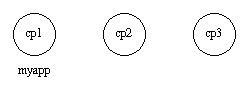
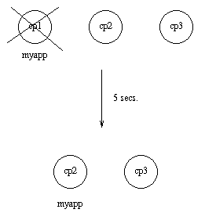
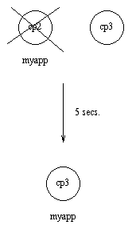
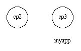
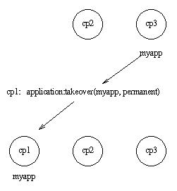

OTP Design Principles
otp design principles The OTP design principles define how to structure Erlang code in terms of processes, modules, and directories.
Supervision Trees
A basic concept in Erlang/OTP is the supervision tree . This is a process structuring model based on the idea of workers and supervisors :
- Workers are processes that perform computations, that is, they do the actual work.
- Supervisors are processes that monitor the behaviour of workers. A supervisor can restart a worker if something goes wrong.
- The supervision tree is a hierarchical arrangement of code into supervisors and workers, which makes it possible to design and program fault-tolerant software.
In the following figure, square boxes represents supervisors and circles represent workers:
sup6 
Behaviours
In a supervision tree, many of the processes have similar structures, they follow similar patterns. For example, the supervisors are similar in structure. The only difference between them is which child processes they supervise. Many of the workers are servers in a server-client relation, finite-state machines, or event handlers.
Behaviours are formalizations of these common patterns. The idea is to divide the code for a process in a generic part (a behaviour module) and a specific part (a callback module ).
The behaviour module is part of Erlang/OTP. To implement a process such as a supervisor, the user only has to implement the callback module which is to export a pre-defined set of functions, the callback functions .
The following example illustrate how code can be divided into a generic and a specific part. Consider the following code (written in plain Erlang) for a simple server, which keeps track of a number of "channels". Other processes can allocate and free the channels by calling the functions alloc/0 and free/1 , respectively. ch1
-module(ch1).
-export([start/0]).
-export([alloc/0, free/1]).
-export([init/0]).
start() ->
spawn(ch1, init, []).
alloc() ->
ch1 ! {self(), alloc},
receive
{ch1, Res} ->
Res
end.
free(Ch) ->
ch1 ! {free, Ch},
ok.
init() ->
register(ch1, self()),
Chs = channels(),
loop(Chs).
loop(Chs) ->
receive
{From, alloc} ->
{Ch, Chs2} = alloc(Chs),
From ! {ch1, Ch},
loop(Chs2);
{free, Ch} ->
Chs2 = free(Ch, Chs),
loop(Chs2)
end.
The code for the server can be rewritten into a generic part server.erl :
-module(server).
-export([start/1]).
-export([call/2, cast/2]).
-export([init/1]).
start(Mod) ->
spawn(server, init, [Mod]).
call(Name, Req) ->
Name ! {call, self(), Req},
receive
{Name, Res} ->
Res
end.
cast(Name, Req) ->
Name ! {cast, Req},
ok.
init(Mod) ->
register(Mod, self()),
State = Mod:init(),
loop(Mod, State).
loop(Mod, State) ->
receive
{call, From, Req} ->
{Res, State2} = Mod:handle_call(Req, State),
From ! {Mod, Res},
loop(Mod, State2);
{cast, Req} ->
State2 = Mod:handle_cast(Req, State),
loop(Mod, State2)
end.
And a callback module ch2.erl :
-module(ch2).
-export([start/0]).
-export([alloc/0, free/1]).
-export([init/0, handle_call/2, handle_cast/2]).
start() ->
server:start(ch2).
alloc() ->
server:call(ch2, alloc).
free(Ch) ->
server:cast(ch2, {free, Ch}).
init() ->
channels().
handle_call(alloc, Chs) ->
alloc(Chs). % => {Ch,Chs2}
handle_cast({free, Ch}, Chs) ->
free(Ch, Chs). % => Chs2
Notice the following:
- The code in server can be reused to build many different servers.
- The server name, in this example the atom ch2 , is hidden from the users of the client functions. This means that the name can be changed without affecting them.
- The protocol (messages sent to and received from the server) is also hidden. This is good programming practice and allows one to change the protocol without changing the code using the interface functions.
- The functionality of server can be extended without having to change ch2 or any other callback module.
In ch1.erl and ch2.erl above, the implementation of channels/0 , alloc/1 , and free/2 has been intentionally left out, as it is not relevant to the example. For completeness, one way to write these functions are given below. This is an example only, a realistic implementation must be able to handle situations like running out of channels to allocate, and so on.
channels() ->
{_Allocated = [], _Free = lists:seq(1,100)}.
alloc({Allocated, [H|T] = _Free}) ->
{H, {[H|Allocated], T}}.
free(Ch, {Alloc, Free} = Channels) ->
case lists:member(Ch, Alloc) of
true ->
{lists:delete(Ch, Alloc), [Ch|Free]};
false ->
Channels
end.
Code written without using behaviours can be more efficient, but the increased efficiency is at the expense of generality. The ability to manage all applications in the system in a consistent manner is important.
Using behaviours also makes it easier to read and understand code written by other programmers. Improvised programming structures, while possibly more efficient, are always more difficult to understand.
The server module corresponds, greatly simplified, to the Erlang/OTP behaviour gen_server .
The standard Erlang/OTP behaviours are:
For implementing the server of a client-server relation * gen_statem
For implementing state machines * gen_event
For implementing event handling functionality * supervisor
For implementing a supervisor in a supervision tree
The compiler understands the module attribute -behaviour(Behaviour) and issues warnings about missing callback functions, for example:
-module(chs3).
-behaviour(gen_server).
...
3> c(chs3).
./chs3.erl:10: Warning: undefined call-back function handle_call/3
{ok,chs3}
Applications
Erlang/OTP comes with a number of components, each implementing some specific functionality. Components are with Erlang/OTP terminology called applications . Examples of Erlang/OTP applications are Mnesia, which has everything needed for programming database services, and Debugger, which is used to debug Erlang programs. The minimal system based on Erlang/OTP consists of the following two applications:
- Kernel - Functionality necessary to run Erlang
- STDLIB - Erlang standard libraries
The application concept applies both to program structure (processes) and directory structure (modules).
The simplest applications do not have any processes, but consist of a collection of functional modules. Such an application is called a library application . An example of a library application is STDLIB.
An application with processes is easiest implemented as a supervision tree using the standard behaviours.
How to program applications is described in Applications .
Releases
A release is a complete system made out from a subset of Erlang/OTP applications and a set of user-specific applications.
How to program releases is described in Releases .
How to install a release in a target environment is described in the section about target systems in Section 2 System Principles.
Release Handling
Release handling is upgrading and downgrading between different versions of a release, in a (possibly) running system. How to do this is described in Release Handling . gen_server This section is to be read with the gen_server(3) manual page in stdlib , where all interface functions and callback functions are described in detail.
Client-Server Principles
The client-server model is characterized by a central server and an arbitrary number of clients. The client-server model is used for resource management operations, where several different clients want to share a common resource. The server is responsible for managing this resource.
clientserver 
Example
An example of a simple server written in plain Erlang is provided in Overview . The server can be reimplemented using gen_server , resulting in this callback module: ex
-module(ch3).
-behaviour(gen_server).
-export([start_link/0]).
-export([alloc/0, free/1]).
-export([init/1, handle_call/3, handle_cast/2]).
start_link() ->
gen_server:start_link({local, ch3}, ch3, [], []).
alloc() ->
gen_server:call(ch3, alloc).
free(Ch) ->
gen_server:cast(ch3, {free, Ch}).
init(_Args) ->
{ok, channels()}.
handle_call(alloc, _From, Chs) ->
{Ch, Chs2} = alloc(Chs),
{reply, Ch, Chs2}.
handle_cast({free, Ch}, Chs) ->
Chs2 = free(Ch, Chs),
{noreply, Chs2}.
The code is explained in the next sections.
Starting a Gen_Server
In the example in the previous section, gen_server is started by calling ch3:start_link() :
start_link() ->
gen_server:start_link({local, ch3}, ch3, [], []) => {ok, Pid}
start_link calls function gen_server:start_link/4 . This function spawns and links to a new process, a gen_server .
- The first argument, {local, ch3} , specifies the name. The gen_server is then locally registered as ch3 .
If the name is omitted, the gen_server is not registered. Instead its pid must be used. The name can also be given as {global, Name} , in which case the gen_server is registered using global:register_name/2 . * The second argument, ch3 , is the name of the callback module, that is, the module where the callback functions are located.
The interface functions ( start_link , alloc , and free ) are then located in the same module as the callback functions ( init , handle_call , and handle_cast ). This is normally good programming practice, to have the code corresponding to one process contained in one module. * The third argument, [] , is a term that is passed as is to the callback function init . Here, init does not need any indata and ignores the argument. * The fourth argument, [] , is a list of options. See the gen_server(3) manual page for available options.
If name registration succeeds, the new gen_server process calls the callback function ch3:init([]) . init is expected to return {ok, State} , where State is the internal state of the gen_server . In this case, the state is the available channels.
init(_Args) ->
{ok, channels()}.
gen_server:start_link is synchronous. It does not return until the gen_server has been initialized and is ready to receive requests.
gen_server:start_link must be used if the gen_server is part of a supervision tree, that is, started by a supervisor. There is another function, gen_server:start , to start a standalone gen_server , that is, a gen_server that is not part of a supervision tree.
Synchronous Requests - Call
The synchronous request alloc() is implemented using gen_server:call/2 :
alloc() ->
gen_server:call(ch3, alloc).
ch3 is the name of the gen_server and must agree with the name used to start it. alloc is the actual request.
The request is made into a message and sent to the gen_server . When the request is received, the gen_server calls handle_call(Request, From, State) , which is expected to return a tuple {reply,Reply,State1} . Reply is the reply that is to be sent back to the client, and State1 is a new value for the state of the gen_server .
handle_call(alloc, _From, Chs) ->
{Ch, Chs2} = alloc(Chs),
{reply, Ch, Chs2}.
In this case, the reply is the allocated channel Ch and the new state is the set of remaining available channels Chs2 .
Thus, the call ch3:alloc() returns the allocated channel Ch and the gen_server then waits for new requests, now with an updated list of available channels.
Asynchronous Requests - Cast
The asynchronous request free(Ch) is implemented using gen_server:cast/2 :
free(Ch) ->
gen_server:cast(ch3, {free, Ch}).
ch3 is the name of the gen_server . {free, Ch} is the actual request.
The request is made into a message and sent to the gen_server . cast , and thus free , then returns ok .
When the request is received, the gen_server calls handle_cast(Request, State) , which is expected to return a tuple {noreply,State1} . State1 is a new value for the state of the gen_server .
handle_cast({free, Ch}, Chs) ->
Chs2 = free(Ch, Chs),
{noreply, Chs2}.
In this case, the new state is the updated list of available channels Chs2 . The gen_server is now ready for new requests.
Stopping
In a Supervision Tree
If the gen_server is part of a supervision tree, no stop function is needed. The gen_server is automatically terminated by its supervisor. Exactly how this is done is defined by a shutdown strategy set in the supervisor.
If it is necessary to clean up before termination, the shutdown strategy must be a time-out value and the gen_server must be set to trap exit signals in function init . When ordered to shutdown, the gen_server then calls the callback function terminate(shutdown, State) :
init(Args) ->
...,
process_flag(trap_exit, true),
...,
{ok, State}.
...
terminate(shutdown, State) ->
..code for cleaning up here..
ok.
Standalone Gen_Servers
If the gen_server is not part of a supervision tree, a stop function can be useful, for example:
...
export([stop/0]).
...
stop() ->
gen_server:cast(ch3, stop).
...
handle_cast(stop, State) ->
{stop, normal, State};
handle_cast({free, Ch}, State) ->
....
...
terminate(normal, State) ->
ok.
The callback function handling the stop request returns a tuple {stop,normal,State1} , where normal specifies that it is a normal termination and State1 is a new value for the state of the gen_server . This causes the gen_server to call terminate(normal, State1) and then it terminates gracefully.
Handling Other Messages
If the gen_server is to be able to receive other messages than requests, the callback function handle_info(Info, State) must be implemented to handle them. Examples of other messages are exit messages, if the gen_server is linked to other processes (than the supervisor) and trapping exit signals.
handle_info({'EXIT', Pid, Reason}, State) ->
..code to handle exits here..
{noreply, State1}.
The code_change method must also be implemented.
code_change(OldVsn, State, Extra) ->
..code to convert state (and more) during code change
{ok, NewState}.
gen_statem Behaviour This section is to be read with the stdlib/gen_statem manual page in STDLIB, where all interface functions and callback functions are described in detail. Event-Driven State Machines
Event-Driven State Machines
Established Automata Theory does not deal much with how a state transition is triggered, but assumes that the output is a function of the input (and the state) and that they are some kind of values.
For an Event-Driven State Machine, the input is an event that triggers a state transition and the output is actions executed during the state transition . It can analogously to the mathematical model of a Finite State Machine be described as a set of relations of the following form:
State(S) x Event(E) -> Actions(A), State(S')
These relations are interpreted as follows: if we are in state S and event E occurs, we are to perform actions A and make a transition to state S' . Notice that S' can be equal to S and that A can be empty.
In gen_statem we define a state change as a state transition in which the new state S' is different from the current state S , where "different" means Erlang's strict inequality: =/= also know as "does not match". During a state changes , gen_statem does more things than during other state transitions .
As A and S' depend only on S and E , the kind of state machine described here is a Mealy machine (see, for example, the Wikipedia article "Mealy machine").
Like most gen_ behaviors, gen_statem keeps a server Data besides the state. Because of this, and as there is no restriction on the number of states (assuming that there is enough virtual machine memory) or on the number of distinct input events, a state machine implemented with this behavior is in fact Turing complete. But it feels mostly like an Event-Driven Mealy machine. When to use gen_statem
When to use gen_statem
If your process logic is convenient to describe as a state machine, and you want any of these gen_statem key features:
- Co-located callback code for each state, for all Event Types (such as call , cast and info )
- Postponing Events (a substitute for selective receive)
- Inserted Events that is: events from the state machine to itself (in particular purely internal events)
- State Enter Calls (callback on state entry co-located with the rest of each state's callback code)
- Easy-to-use time-outs ( State Time-Outs , Event Time-Outs and Generic Time-outs (named time-outs))
If so, or if possibly needed in future versions, then you should consider using gen_statem over stdlib/gen_server .
For simple state machines not needing these features stdlib/gen_server works just fine. It also has got smaller call overhead, but we are talking about something like 2 vs 3.3 microseconds call roundtrip time here, so if the server callback does just a little bit more than just replying, or if the call is not extremely frequent, that difference will be hard to notice. Callback Module
Callback Module
The callback module contains functions that implement the state machine. When an event occurs, the gen_statem behaviour engine calls a function in the callback module with the event, current state and server data. This function performs the actions for this event, and returns the new state and server data and also actions to be performed by the behaviour engine.
The behaviour engine holds the state machine state, server data, timer references, a queue of posponed messages and other metadata. It receives all process messages, handles the system messages, and calls the callback module with machine specific events. Callback Modes
Callback Modes
The gen_statem behavior supports two callback modes :
- stdlib/gen_statem#type-callback_mode
- Events are handled by one callback function per state.
- stdlib/gen_statem#type-callback_mode
- Events are handled by one single callback function.
See the section State Callback that describes the event handling callback function(s).
The callback mode is selected by implementing a mandatory callback function stdlib/gen_statem#Module:callback_mode/0 that returns one of the callback modes .
The stdlib/gen_statem#Module:callback_mode/0 function may also return a list containing the callback mode and the atom state_enter in which case State Enter Calls are activated for the callback mode . Choosing the Callback Mode
Choosing the Callback Mode
The short version: choose state_functions - it is the one most like gen_fsm . But if you do not want the restriction that the state must be an atom, or if you do not want to write one state callback function per state; please read on...
The two Callback Modes give different possibilities and restrictions, with one common goal: to handle all possible combinations of events and states.
This can be done, for example, by focusing on one state at the time and for every state ensure that all events are handled. Alternatively, you can focus on one event at the time and ensure that it is handled in every state. You can also use a mix of these strategies.
With state_functions , you are restricted to use atom-only states, and the gen_statem engine branches depending on state name for you. This encourages the callback module to co-locate the implementation of all event actions particular to one state in the same place in the code, hence to focus on one state at the time.
This mode fits well when you have a regular state diagram, like the ones in this chapter, which describes all events and actions belonging to a state visually around that state, and each state has its unique name.
With handle_event_function , you are free to mix strategies, as all events and states are handled in the same callback function.
This mode works equally well when you want to focus on one event at the time or on one state at the time, but function stdlib/gen_statem#Module:handle_event/4 quickly grows too large to handle without branching to helper functions.
The mode enables the use of non-atom states, for example, complex states or even hierarchical states. See section Complex State . If, for example, a state diagram is largely alike for the client side and the server side of a protocol, you can have a state {StateName,server} or {StateName,client} , and make StateName determine where in the code to handle most events in the state. The second element of the tuple is then used to select whether to handle special client-side or server-side events. State Callback
State Callback
The state callback is the callback function that handles an event in the current state, and which function that is depends on the callback mode :
- state_functions
- The event is handled by: stdlib/gen_statem#Module:StateName/3 This form is the one mostly used in the Example section.
- handle_event_function
- The event is handled by: stdlib/gen_statem#Module:handle_event/4 See section One State Callback for an example.
State enter calls are also handled by the event handler and have slightly different arguments. See section State Enter Calls .
The state callback return values are defined in the description of stdlib/gen_statem#Module:StateName/3 in the gen_statem manual page, but here is a more readable list:
- {next_state, NextState, NewData, Actions} {next_state, NextState, NewData}
- Set next state and update the server data. If the Actions field is used, execute transition actions . An empty Actions list is equivalent to not returning the field. See section Transition Actions for a list of possible transition actions . If NextState =/= State this is a state change so the extra things gen_statem does are: the event queue is restarted from the oldest postponed event , any current state time-out is cancelled, and a state enter call is performed, if enabled.
- {keep_state, NewData, Actions} {keep_state, NewData}
- Same as the next_state values with NextState =:= State , that is, no state change .
- {keep_state_and_data, Actions} keep_state_and_data
- Same as the keep_state values with NextData =:= Data , that is, no change in server data.
- {repeat_state, NewData, Actions} {repeat_state, NewData} {repeat_state_and_data, Actions} repeat_state_and_data
- Same as the keep_state or keep_state_and_data values, and if State Enter Calls are enabled, repeat the state enter call as if this state was entered again. If these return values are used from a state enter call the OldState does not change, but if used from an event handling state callback the new state enter call's OldState will be the current state.
- {stop, Reason, NewData} {stop, Reason}
- Stop the server with reason Reason . If the NewData field is used, first update the server data.
- {stop_and_reply, Reason, NewData, ReplyActions} {stop_and_reply, Reason, ReplyActions}
- Same as the stop values, but first execute the given Transition Actions that may only be reply actions.
The First State
To decide the first state the stdlib/gen_statem#Module:init/1 callback function is called before any State Callback is called. This function behaves like an state callback function, but gets its only argument Args from the gen_statem stdlib/gen_statem#start/3 or stdlib/gen_statem#start_link/3 function, and returns {ok, State, Data} or {ok, State, Data, Actions} . If you use the Postponing Events action from this function, that action is ignored, since there is no event to postpone. Transition Actions
Transition Actions
In the first section Event-Driven State Machines actions were mentioned as a part of the general state machine model. These general actions are implemented with the code that callback module gen_statem executes in an event-handling callback function before returning to the gen_statem engine.
There are more specific transition actions that a callback function can command the gen_statem engine to do after the callback function return. These are commanded by returning a list of actions in the return value from the callback function . These are the possible transition actions :
- stdlib/gen_statem#type-postpone {postpone, Boolean}
- If set postpone the current event, see section Postponing Events .
- stdlib/gen_statem#type-hibernate {hibernate, Boolean}
- If set hibernate the gen_statem , treated in section Hibernation .
- stdlib/gen_statem#type-state_timeout {state_timeout, EventContent, Time, Opts}
- Start a state time-out, read more in sections Time-Outs and State Time-Outs .
- stdlib/gen_statem#type-generic_timeout {{timeout, Name}, EventContent, Time, Opts}
- Start a generic time-out, read more in sections Time-Outs and Generic Time-Outs .
- stdlib/gen_statem#type-event_timeout {timeout, EventContent, Time, Opts} Time
- Start an event time-out, see more in sections Time-Outs and Event Time-Outs .
- stdlib/gen_statem#type-reply_action
- Reply to a caller, mentioned at the end of section All State Events .
- stdlib/gen_statem#type-action
- Generate the next event to handle, see section Inserted Events .
Event Types
Events are categorized in different stdlib/gen_statem#type-event_type . Events of all types are for a given state handled in the same callback function, and that function gets EventType and EventContent as arguments.
The following is a complete list of event types and where they come from:
- stdlib/gen_statem#type-external_event_type
- Generated by stdlib/gen_statem#cast/2 .
- stdlib/gen_statem#type-external_event_type
- Generated by stdlib/gen_statem#call/2 , where From is the reply address to use when replying either through the transition action {reply,From,Msg} or by calling stdlib/gen_statem#reply/1 .
- stdlib/gen_statem#type-external_event_type
- Generated by any regular process message sent to the gen_statem process.
- stdlib/gen_statem#type-timeout_event_type
- Generated by transition action stdlib/gen_statem#type-timeout_action state timer timing out. Read more in sections Time-Outs and State Time-Outs .
- stdlib/gen_statem#type-timeout_event_type
- Generated by transition action stdlib/gen_statem#type-timeout_action generic timer timing out. Read more in sections Time-Outs and Generic Time-Outs .
- stdlib/gen_statem#type-timeout_event_type
- Generated by transition action stdlib/gen_statem#type-timeout_action (or its short form Time ) event timer timing out. Read more in sections Time-Outs and Event Time-Outs .
- stdlib/gen_statem#type-event_type
- Generated by transition action stdlib/gen_statem#type-enter_action . All event types above can also be generated using the next_event action: {next_event,EventType,EventContent} .
State Enter Calls
The gen_statem behavior can if this is enabled, regardless of callback mode , automatically call the state callback with special arguments whenever the state changes so you can write state enter actions near the rest of the state transition rules. It typically looks like this:
StateName(enter, OldState, Data) ->
... code for state enter actions here ...
{keep_state, NewData};
StateName(EventType, EventContent, Data) ->
... code for actions here ...
{next_state, NewStateName, NewData}.
Since the state enter call is not an event there are restrictions on the allowed return value and State Transition Actions . You may not change the state, postpone this non-event, or insert any events .
The first state that is entered will get a state enter call with OldState equal to the current state.
You may repeat the state enter call using the {repeat_state,...} return value from the state callback . In this case OldState will also be equal to the current state.
Depending on how your state machine is specified, this can be a very useful feature, but it forces you to handle the state enter calls in all states. See also the State Enter Actions section. Time-Outs
Time-outs
Time-outs in gen_statem are started from a Transition Actions during a state transition that is when exiting from the State Callback .
There are 3 types of time-outs in gen_statem :
- stdlib/gen_statem#type-state_timeout
- There is one State Time-Out that is automatically cancelled by a state change .
- stdlib/gen_statem#type-generic_timeout
- There are any number of Generic Time-Outs differing by their Name . They have no automatic cancelling.
- stdlib/gen_statem#type-event_timeout
- There is one Event Time-Out that is automatically cancelled by any event. Note that postponed and inserted events cancel this timeout just as external events.
All time-outs has got an EventContent that is part of the Transition Actions that starts the time-out. Different EventContent s does not create different time-outs. The EventContent is delivered to the State Callback when the time-out expires. Cancelling a Time-Out
Cancelling a Time-Out
If a time-out is started with the time infinity it will never time out, in fact it will not even be started, and any running time-out with the same tag will be cancelled. The EventContent will in this case be ignored, so why not set it to undefined . Time-Out Zero
Time-Out Zero
If a time-out is started with the time 0 it will actually not be started. Instead the time-out event will immediately be inserted to be processed after any events already enqueued, and before any not yet received external events. Note that some time-outs are automatically cancelled so if you for example combine postponing an event in a state change with starting an event time-out with time 0 there will be no timeout event inserted since the event time-out is cancelled by the postponed event that is delivered due to the state change. Example
Example
A door with a code lock can be seen as a state machine. Initially, the door is locked. When someone presses a button, an event is generated. The pressed buttons are collected, up to the number of buttons in the correct code. If correct, the door is unlocked for 10 seconds. If not correct, we wait for a new button to be pressed.
 This code lock state machine can be implemented using gen_statem with the following callback module :
This code lock state machine can be implemented using gen_statem with the following callback module :
-module(code_lock).
-behaviour(gen_statem).
-define(NAME, code_lock).
-export([start_link/1]).
-export([button/1]).
-export([init/1,callback_mode/0,terminate/3]).
-export([locked/3,open/3]).
start_link(Code) ->
gen_statem:start_link({local,?NAME}, ?MODULE, Code, []).
button(Button) ->
gen_statem:cast(?NAME, {button,Button}).
init(Code) ->
do_lock(),
Data = #{code => Code, length => length(Code), buttons => []},
{ok, locked, Data}.
callback_mode() ->
state_functions.
locked(
cast, {button,Button},
#{code := Code, length := Length, buttons := Buttons} = Data) ->
NewButtons =
if
length(Buttons) < Length ->
Buttons;
true ->
tl(Buttons)
end ++ [Button],
if
NewButtons =:= Code -> % Correct
do_unlock(),
{next_state, open, Data#{buttons := []},
[{state_timeout,10000,lock}]}; % Time in milliseconds
true -> % Incomplete | Incorrect
{next_state, locked, Data#{buttons := NewButtons}}
end.
open(state_timeout, lock, Data) ->
do_lock(),
{next_state, locked, Data};
open(cast, {button,_}, Data) ->
{next_state, open, Data}.
do_lock() ->
io:format("Lock~n", []).
do_unlock() ->
io:format("Unlock~n", []).
terminate(_Reason, State, _Data) ->
State =/= locked andalso do_lock(),
ok.
The code is explained in the next sections. Starting gen_statem
Starting gen_statem
In the example in the previous section, gen_statem is started by calling code_lock:start_link(Code) :
start_link(Code) ->
gen_statem:start_link({local,?NAME}, ?MODULE, Code, []).
start_link calls function stdlib/gen_statem#start_link/4 , which spawns and links to a new process, a gen_statem .
- The first argument, {local,?NAME} , specifies the name. In this case, the gen_statem is locally registered as code_lock through the macro ?NAME .
If the name is omitted, the gen_statem is not registered. Instead its pid must be used. The name can also be specified as {global,Name} , then the gen_statem is registered using kernel/global#register_name/2 in Kernel. * The second argument, ?MODULE , is the name of the callback module , that is, the module where the callback functions are located, which is this module.
The interface functions ( start_link/1 and button/1 ) are located in the same module as the callback functions ( init/1 , locked/3 , and open/3 ). It is normally good programming practice to have the client-side code and the server-side code contained in one module. * The third argument, Code , is a list of digits, which is the correct unlock code that is passed to callback function init/1 . * The fourth argument, [] , is a list of options. For the available options, see stdlib/gen_statem#start_link/3 .
If name registration succeeds, the new gen_statem process calls callback function code_lock:init(Code) . This function is expected to return {ok, State, Data} , where State is the initial state of the gen_statem , in this case locked ; assuming that the door is locked to begin with. Data is the internal server data of the gen_statem . Here the server data is a map with key code that stores the correct button sequence, key length store its length, and key buttons that stores the collected buttons up to the same length.
init(Code) ->
do_lock(),
Data = #{code => Code, length => length(Code), buttons => []},
{ok, locked, Data}.
Function stdlib/gen_statem#start_link/3 is synchronous. It does not return until the gen_statem is initialized and is ready to receive events.
Function stdlib/gen_statem#start_link/3 must be used if the gen_statem is part of a supervision tree, that is, started by a supervisor. Another function, stdlib/gen_statem#start/3 can be used to start a standalone gen_statem , that is, a gen_statem that is not part of a supervision tree.
Function stdlib/gen_statem#Module:callback_mode/0 selects the Callback Modes for the callback module , in this case stdlib/gen_statem#type-callback_mode . That is, each state has got its own handler function:
callback_mode() ->
state_functions.
Handling Events
The function notifying the code lock about a button event is implemented using stdlib/gen_statem#cast/2 :
button(Button) ->
gen_statem:cast(?NAME, {button,Button}).
The first argument is the name of the gen_statem and must agree with the name used to start it. So, we use the same macro ?NAME as when starting. {button,Button} is the event content.
The event is sent to the gen_statem . When the event is received, the gen_statem calls StateName(cast, Event, Data) , which is expected to return a tuple {next_state, NewStateName, NewData} , or {next_state, NewStateName, NewData, Actions} . StateName is the name of the current state and NewStateName is the name of the next state to go to. NewData is a new value for the server data of the gen_statem , and Actions is a list of actions to be performed by the gen_statem engine.
locked(
cast, {button,Button},
#{code := Code, length := Length, buttons := Buttons} = Data) ->
NewButtons =
if
length(Buttons) < Length ->
Buttons;
true ->
tl(Buttons)
end ++ [Button],
if
NewButtons =:= Code -> % Correct
do_unlock(),
{next_state, open, Data#{buttons := []},
[{state_timeout,10000,lock}]}; % Time in milliseconds
true -> % Incomplete | Incorrect
{next_state, locked, Data#{buttons := NewButtons}}
end.
In state locked , when a button is pressed, it is collected with the last pressed buttons up to the length of the correct code, and compared with the correct code. Depending on the result, the door is either unlocked and the gen_statem goes to state open , or the door remains in state locked .
When changing to state open , the collected buttons are reset, the lock unlocked, and a state timer for 10 s is started.
open(cast, {button,_}, Data) ->
{next_state, open, Data}.
In state open , a button event is ignored by staying in the same state. This can also be done by returning {keep_state, Data} or in this case since Data unchanged even by returning keep_state_and_data . State Time-Outs
State Time-Outs
When a correct code has been given, the door is unlocked and the following tuple is returned from locked/2 :
{next_state, open, Data#{buttons := []},
[{state_timeout,10000,lock}]}; % Time in milliseconds
10,000 is a time-out value in milliseconds. After this time (10 seconds), a time-out occurs. Then, StateName(state_timeout, lock, Data) is called. The time-out occurs when the door has been in state open for 10 seconds. After that the door is locked again:
open(state_timeout, lock, Data) ->
do_lock(),
{next_state, locked, Data};
The timer for a state time-out is automatically cancelled when the state machine does a state change . You can restart a state time-out by setting it to a new time, which cancels the running timer and starts a new. This implies that you can cancel a state time-out by restarting it with time infinity . All State Events
All State Events
Sometimes events can arrive in any state of the gen_statem . It is convenient to handle these in a common state handler function that all state functions call for events not specific to the state.
Consider a code_length/0 function that returns the length of the correct code. We dispatch all events that are not state-specific to the common function handle_common/3 :
...
-export([button/1,code_length/0]).
...
code_length() ->
gen_statem:call(?NAME, code_length).
...
locked(...) -> ... ;
locked(EventType, EventContent, Data) ->
handle_common(EventType, EventContent, Data).
...
open(...) -> ... ;
open(EventType, EventContent, Data) ->
handle_common(EventType, EventContent, Data).
handle_common({call,From}, code_length, #{code := Code} = Data) ->
{keep_state, Data,
[{reply,From,length(Code)}]}.
Another way to do it is through a convenience macro ?HANDLE_COMMON/0 :
...
-export([button/1,code_length/0]).
...
code_length() ->
gen_statem:call(?NAME, code_length).
-define(HANDLE_COMMON,
?FUNCTION_NAME(T, C, D) -> handle_common(T, C, D)).
%%
handle_common({call,From}, code_length, #{code := Code} = Data) ->
{keep_state, Data,
[{reply,From,length(Code)}]}.
...
locked(...) -> ... ;
?HANDLE_COMMON.
...
open(...) -> ... ;
?HANDLE_COMMON.
This example uses stdlib/gen_statem#call/2 , which waits for a reply from the server. The reply is sent with a {reply,From,Reply} tuple in an action list in the {keep_state, ...} tuple that retains the current state. This return form is convenient when you want to stay in the current state but do not know or care about what it is.
If the common state callback needs to know the current state a function handle_common/4 can be used instead:
-define(HANDLE_COMMON,
?FUNCTION_NAME(T, C, D) -> handle_common(T, C, ?FUNCTION_NAME, D)).
One State Callback
If Callback Modes handle_event_function is used, all events are handled in stdlib/gen_statem#Module:handle_event/4 and we can (but do not have to) use an event-centered approach where we first branch depending on event and then depending on state:
...
-export([handle_event/4]).
...
callback_mode() ->
handle_event_function.
handle_event(cast, {button,Button}, State, #{code := Code} = Data) ->
case State of
locked ->
#{length := Length, buttons := Buttons} = Data,
NewButtons =
if
length(Buttons) < Length ->
Buttons;
true ->
tl(Buttons)
end ++ [Button],
if
NewButtons =:= Code -> % Correct
do_unlock(),
{next_state, open, Data#{buttons := []},
[{state_timeout,10000,lock}]}; % Time in milliseconds
true -> % Incomplete | Incorrect
{keep_state, Data#{buttons := NewButtons}}
end;
open ->
keep_state_and_data
end;
handle_event(state_timeout, lock, open, Data) ->
do_lock(),
{next_state, locked, Data};
handle_event(
{call,From}, code_length, _State, #{code := Code} = Data) ->
{keep_state, Data,
[{reply,From,length(Code)}]}.
...
Stopping
In a Supervision Tree
If the gen_statem is part of a supervision tree, no stop function is needed. The gen_statem is automatically terminated by its supervisor. Exactly how this is done is defined by a shutdown strategy set in the supervisor.
If it is necessary to clean up before termination, the shutdown strategy must be a time-out value and the gen_statem must in function init/1 set itself to trap exit signals by calling erts/erlang#process_flag/2 :
init(Args) ->
process_flag(trap_exit, true),
do_lock(),
...
When ordered to shut down, the gen_statem then calls callback function terminate(shutdown, State, Data) .
In this example, function terminate/3 locks the door if it is open, so we do not accidentally leave the door open when the supervision tree terminates:
terminate(_Reason, State, _Data) ->
State =/= locked andalso do_lock(),
ok.
Standalone gen_statem
If the gen_statem is not part of a supervision tree, it can be stopped using stdlib/gen_statem#stop/1 , preferably through an API function:
...
-export([start_link/1,stop/0]).
...
stop() ->
gen_statem:stop(?NAME).
This makes the gen_statem call callback function terminate/3 just like for a supervised server and waits for the process to terminate. Event Time-Outs
Event Time-Outs
A time-out feature inherited from gen_statem 's predecessor stdlib/gen_fsm , is an event time-out, that is, if an event arrives the timer is cancelled. You get either an event or a time-out, but not both.
It is ordered by the Transition Actions {timeout,Time,EventContent} , or just an integer Time , even without the enclosing actions list (the latter is a form inherited from gen_fsm .
This type of time-out is useful for example to act on inactivity. Let us restart the code sequence if no button is pressed for say 30 seconds:
...
locked(timeout, _, Data) ->
{next_state, locked, Data#{buttons := []}};
locked(
cast, {button,Button},
#{code := Code, length := Length, buttons := Buttons} = Data) ->
...
true -> % Incomplete | Incorrect
{next_state, locked, Data#{buttons := NewButtons},
30000} % Time in milliseconds
...
Whenever we receive a button event we start an event time-out of 30 seconds, and if we get an event type of timeout we reset the remaining code sequence.
An event time-out is cancelled by any other event so you either get some other event or the time-out event. It is therefore not possible nor needed to cancel or restart an event time-out. Whatever event you act on has already cancelled the event time-out...
Note that an event time-out does not work well with when you have for example a status call as in section All State Events , or handle unknown events, since all kinds of events will cancel the event time-out. Generic Time-Outs
Generic Time-Outs
The previous example of state time-outs only work if the state machine stays in the same state during the time-out time. And event time-outs only work if no disturbing unrelated events occur.
You may want to start a timer in one state and respond to the time-out in another, maybe cancel the time-out without changing states, or perhaps run multiple time-outs in parallel. All this can be accomplished with generic time-outs . They may look a little bit like event time-outs but contain a name to allow for any number of them simultaneously and they are not automatically cancelled.
Here is how to accomplish the state time-out in the previous example by instead using a generic time-out named for example open :
...
locked(
cast, {button,Button},
#{code := Code, length := Length, buttons := Buttons} = Data) ->
...
if
NewButtons =:= Code -> % Correct
do_unlock(),
{next_state, open, Data#{buttons := []},
[{{timeout,open},10000,lock}]}; % Time in milliseconds
...
open({timeout,open}, lock, Data) ->
do_lock(),
{next_state,locked,Data};
open(cast, {button,_}, Data) ->
{keep_state,Data};
...
Specific generic time-outs can just as state time-outs be restarted or cancelled by setting it to a new time or infinity .
In this particular case we do not need to cancel the time-out since the time-out event is the only possible reason to do a state change from open to locked .
Instead of bothering with when to cancel a time-out, a late time-out event can be handled by ignoring it if it arrives in a state where it is known to be late. Erlang Timers
Erlang Timers
The most versatile way to handle time-outs is to use Erlang Timers; see erts/erlang#start_timer/4 . Most time-out tasks can be performed with the time-out features in gen_statem , but an example of one that cannot is if you should need the return value from erts/erlang#cancel_timer/2 , that is; the remaining time of the timer.
Here is how to accomplish the state time-out in the previous example by instead using an Erlang Timer:
...
locked(
cast, {button,Button},
#{code := Code, length := Length, buttons := Buttons} = Data) ->
...
if
NewButtons =:= Code -> % Correct
do_unlock(),
Tref =
erlang:start_timer(
10000, self(), lock), % Time in milliseconds
{next_state, open, Data#{buttons := [], timer => Tref}};
...
open(info, {timeout,Tref,lock}, #{timer := Tref} = Data) ->
do_lock(),
{next_state,locked,maps:remove(timer, Data)};
open(cast, {button,_}, Data) ->
{keep_state,Data};
...
Removing the timer key from the map when we do a state change to locked is not strictly necessary since we can only get into state open with an updated timer map value. But it can be nice to not have outdated values in the state Data !
If you need to cancel a timer because of some other event, you can use erts/erlang#cancel_timer/2 . Note that a time-out message cannot arrive after this, unless you have postponed it before (see the next section), so ensure that you do not accidentally postpone such messages. Also note that a time-out message may have arrived just before you cancelling it, so you may have to read out such a message from the process mailbox depending on the return value from erts/erlang#cancel_timer/2 .
Another way to handle a late time-out can be to not cancel it, but to ignore it if it arrives in a state where it is known to be late. Postponing Events
Postponing Events
If you want to ignore a particular event in the current state and handle it in a future state, you can postpone the event. A postponed event is retried after a state change , that is, OldState =/= NewState .
Postponing is ordered by the Transition Actions postpone .
In this example, instead of ignoring button events while in the open state, we can postpone them and they are queued and later handled in the locked state:
...
open(cast, {button,_}, Data) ->
{keep_state,Data,[postpone]};
...
Since a postponed event is only retried after a state change , you have to think about where to keep a state data item. You can keep it in the server Data or in the State itself, for example by having two more or less identical states to keep a boolean value, or by using a complex state (see section Complex State ) with Callback Modes stdlib/gen_statem#type-callback_mode . If a change in the value changes the set of events that is handled, then the value should be kept in the State. Otherwise no postponed events will be retried since only the server Data changes.
This is not important if you do not postpone events. But if you later decide to start postponing some events, then the design flaw of not having separate states when they should be, might become a hard to find bug. Fuzzy State Diagrams
Fuzzy State Diagrams
It is not uncommon that a state diagram does not specify how to handle events that are not illustrated in a particular state in the diagram. Hopefully this is described in an associated text or from the context.
Possible actions: ignore as in drop the event (maybe log it) or deal with the event in some other state as in postpone it. Selective Receive
Selective Receive
Erlang's selective receive statement is often used to describe simple state machine examples in straightforward Erlang code. The following is a possible implementation of the first example:
-module(code_lock).
-define(NAME, code_lock_1).
-export([start_link/1,button/1]).
start_link(Code) ->
spawn(
fun () ->
true = register(?NAME, self()),
do_lock(),
locked(Code, length(Code), [])
end).
button(Button) ->
?NAME ! {button,Button}.
locked(Code, Length, Buttons) ->
receive
{button,Button} ->
NewButtons =
if
length(Buttons) < Length ->
Buttons;
true ->
tl(Buttons)
end ++ [Button],
if
NewButtons =:= Code -> % Correct
do_unlock(),
open(Code, Length);
true -> % Incomplete | Incorrect
locked(Code, Length, NewButtons)
end
end.
open(Code, Length) ->
receive
after 10000 -> % Time in milliseconds
do_lock(),
locked(Code, Length, [])
end.
do_lock() ->
io:format("Locked~n", []).
do_unlock() ->
io:format("Open~n", []).
The selective receive in this case causes implicitly open to postpone any events to the locked state.
A selective receive cannot be used from a gen_statem behavior as for any *gen_ behavior, as the receive statement is within the *gen_ engine itself. It must be there because all stdlib/sys compatible behaviors must respond to system messages and therefore do that in their engine receive loop, passing non-system messages to the callback module .
The Transition Actions postpone is designed to model selective receives. A selective receive implicitly postpones any not received events, but the postpone transition action explicitly postpones one received event.
Both mechanisms have the same theoretical time and memory complexity, while the selective receive language construct has smaller constant factors. State Enter Actions
State Enter Actions
Say you have a state machine specification that uses state enter actions. Allthough you can code this using inserted events (described in the next section), especially if just one or a few states has got state enter actions, this is a perfect use case for the built in State Enter Calls .
You return a list containing state_enter from your stdlib/gen_statem#Module:callback_mode/0 function and the gen_statem engine will call your state callback once with an event (enter, OldState, ...) whenever it does a state change . Then you just need to handle these event-like calls in all states.
...
init(Code) ->
process_flag(trap_exit, true),
Data = #{code => Code, length = length(Code)},
{ok, locked, Data}.
callback_mode() ->
[state_functions,state_enter].
locked(enter, _OldState, Data) ->
do_lock(),
{keep_state,Data#{buttons => []}};
locked(
cast, {button,Button},
#{code := Code, length := Length, buttons := Buttons} = Data) ->
...
if
NewButtons =:= Code -> % Correct
{next_state, open, Data};
...
open(enter, _OldState, _Data) ->
do_unlock(),
{keep_state_and_data,
[{state_timeout,10000,lock}]}; % Time in milliseconds
open(state_timeout, lock, Data) ->
{next_state, locked, Data};
...
You can repeat the state enter code by returning one of {repeat_state, ...} , {repeat_state_and_data,_} or repeat_state_and_data that otherwise behaves exactly like their keep_state siblings. See the type stdlib/gen_statem#type-state_callback_result in the reference manual. Inserted Events
Inserted Events
It can sometimes be beneficial to be able to generate events to your own state machine. This can be done with the Transition Actions {next_event,EventType,EventContent} .
You can generate events of any existing type , but the internal type can only be generated through action next_event . Hence, it cannot come from an external source, so you can be certain that an internal event is an event from your state machine to itself.
One example for this is to pre-process incoming data, for example decrypting chunks or collecting characters up to a line break.
Purists may argue that this should be modelled with a separate state machine that sends pre-processed events to the main state machine, but to decrease overhead the small pre-processing state machine can be implemented in the common state event handling of the main state machine using a few state data variables that then sends the pre-processed events as internal events to the main state machine. Using internal events also can make it easier to synchronize the state machines.
A variant of this is to use a complex state with One State Callback . The state is then modeled with for example a tuple {MainFSMState,SubFSMState} .
To illustrate this we make up an example where the buttons instead generate down and up (press and release) events, and the lock responds to an up event only after the corresponding down event.
...
-export([down/1, up/1]).
...
down(Button) ->
gen_statem:cast(?NAME, {down,Button}).
up(Button) ->
gen_statem:cast(?NAME, {up,Button}).
...
locked(enter, _OldState, Data) ->
do_lock(),
{keep_state,Data#{buttons => []}};
locked(
internal, {button,Button},
#{code := Code, length := Length, buttons := Buttons} = Data) ->
...
handle_common(cast, {down,Button}, Data) ->
{keep_state, Data#{button => Button}};
handle_common(cast, {up,Button}, Data) ->
case Data of
#{button := Button} ->
{keep_state,maps:remove(button, Data),
[{next_event,internal,{button,Button}}]};
#{} ->
keep_state_and_data
end;
...
open(internal, {button,_}, Data) ->
{keep_state,Data,[postpone]};
...
If you start this program with code_lock:start([17]) you can unlock with code_lock:down(17), code_lock:up(17). Example Revisited
Example Revisited
This section includes the example after most of the mentioned modifications and some more using state enter calls , which deserves a new state diagram:
 Notice that this state diagram does not specify how to handle a button event in the state open . So, you need to read in some side notes, that is, here: that unspecified events shall be postponed (handled in some later state). Also, the state diagram does not show that the code_length/0 call must be handled in every state.
Callback Mode: state_functions
Notice that this state diagram does not specify how to handle a button event in the state open . So, you need to read in some side notes, that is, here: that unspecified events shall be postponed (handled in some later state). Also, the state diagram does not show that the code_length/0 call must be handled in every state.
Callback Mode: state_functions
Callback Mode: state_functions
Using state functions:
-module(code_lock).
-behaviour(gen_statem).
-define(NAME, code_lock_2).
-export([start_link/1,stop/0]).
-export([down/1,up/1,code_length/0]).
-export([init/1,callback_mode/0,terminate/3]).
-export([locked/3,open/3]).
start_link(Code) ->
gen_statem:start_link({local,?NAME}, ?MODULE, Code, []).
stop() ->
gen_statem:stop(?NAME).
down(Button) ->
gen_statem:cast(?NAME, {down,Button}).
up(Button) ->
gen_statem:cast(?NAME, {up,Button}).
code_length() ->
gen_statem:call(?NAME, code_length).
init(Code) ->
process_flag(trap_exit, true),
Data = #{code => Code, length => length(Code), buttons => []},
{ok, locked, Data}.
callback_mode() ->
[state_functions,state_enter].
-define(HANDLE_COMMON,
?FUNCTION_NAME(T, C, D) -> handle_common(T, C, D)).
%%
handle_common(cast, {down,Button}, Data) ->
{keep_state, Data#{button => Button}};
handle_common(cast, {up,Button}, Data) ->
case Data of
#{button := Button} ->
{keep_state, maps:remove(button, Data),
[{next_event,internal,{button,Button}}]};
#{} ->
keep_state_and_data
end;
handle_common({call,From}, code_length, #{code := Code}) ->
{keep_state_and_data,
[{reply,From,length(Code)}]}.
locked(enter, _OldState, Data) ->
do_lock(),
{keep_state, Data#{buttons := []}};
locked(state_timeout, button, Data) ->
{keep_state, Data#{buttons := []}};
locked(
internal, {button,Button},
#{code := Code, length := Length, buttons := Buttons} = Data) ->
NewButtons =
if
length(Buttons) < Length ->
Buttons;
true ->
tl(Buttons)
end ++ [Button],
if
NewButtons =:= Code -> % Correct
{next_state, open, Data};
true -> % Incomplete | Incorrect
{keep_state, Data#{buttons := NewButtons},
[{state_timeout,30000,button}]} % Time in milliseconds
end;
?HANDLE_COMMON.
open(enter, _OldState, _Data) ->
do_unlock(),
{keep_state_and_data,
[{state_timeout,10000,lock}]}; % Time in milliseconds
open(state_timeout, lock, Data) ->
{next_state, locked, Data};
open(internal, {button,_}, _) ->
{keep_state_and_data, [postpone]};
?HANDLE_COMMON.
do_lock() ->
io:format("Locked~n", []).
do_unlock() ->
io:format("Open~n", []).
terminate(_Reason, State, _Data) ->
State =/= locked andalso do_lock(),
ok.
Callback Mode: handle_event_function
Callback Mode: handle_event_function
This section describes what to change in the example to use one handle_event/4 function. The previously used approach to first branch depending on event does not work that well here because of the state enter calls , so this example first branches depending on state:
-export([handle_event/4]).
callback_mode() ->
[handle_event_function,state_enter].
%%
%% State: locked
handle_event(enter, _OldState, locked, Data) ->
do_lock(),
{keep_state, Data#{buttons := []}};
handle_event(state_timeout, button, locked, Data) ->
{keep_state, Data#{buttons := []}};
handle_event(
internal, {button,Button}, locked,
#{code := Code, length := Length, buttons := Buttons} = Data) ->
NewButtons =
if
length(Buttons) < Length ->
Buttons;
true ->
tl(Buttons)
end ++ [Button],
if
NewButtons =:= Code -> % Correct
{next_state, open, Data};
true -> % Incomplete | Incorrect
{keep_state, Data#{buttons := NewButtons},
[{state_timeout,30000,button}]} % Time in milliseconds
end;
%%
%% State: open
handle_event(enter, _OldState, open, _Data) ->
do_unlock(),
{keep_state_and_data,
[{state_timeout,10000,lock}]}; % Time in milliseconds
handle_event(state_timeout, lock, open, Data) ->
{next_state, locked, Data};
handle_event(internal, {button,_}, open, _) ->
{keep_state_and_data,[postpone]};
%% Common events
handle_event(cast, {down,Button}, _State, Data) ->
{keep_state, Data#{button => Button}};
handle_event(cast, {up,Button}, _State, Data) ->
case Data of
#{button := Button} ->
{keep_state, maps:remove(button, Data),
[{next_event,internal,{button,Button}},
{state_timeout,30000,button}]}; % Time in milliseconds
#{} ->
keep_state_and_data
end;
handle_event({call,From}, code_length, _State, #{length := Length}) ->
{keep_state_and_data,
[{reply,From,Length}]}.
Notice that postponing buttons from the open state to the locked state feels like a strange thing to do for a code lock, but it at least illustrates event postponing. Filter the State
Filter the State
The example servers so far in this chapter print the full internal state in the error log, for example, when killed by an exit signal or because of an internal error. This state contains both the code lock code and which digits that remain to unlock.
This state data can be regarded as sensitive, and maybe not what you want in the error log because of some unpredictable event.
Another reason to filter the state can be that the state is too large to print, as it fills the error log with uninteresting details.
To avoid this, you can format the internal state that gets in the error log and gets returned from stdlib/sys#get_status/1 by implementing function stdlib/gen_statem#Module:format_status/2 , for example like this:
...
-export([init/1,terminate/3,format_status/2]).
...
format_status(Opt, [_PDict,State,Data]) ->
StateData =
{State,
maps:filter(
fun (code, _) -> false;
(_, _) -> true
end,
Data)},
case Opt of
terminate ->
StateData;
normal ->
[{data,[{"State",StateData}]}]
end.
It is not mandatory to implement a stdlib/gen_statem#Module:format_status/2 function. If you do not, a default implementation is used that does the same as this example function without filtering the Data term, that is, StateData = {State,Data} , in this example containing sensitive information. Complex State
Complex State
The callback mode stdlib/gen_statem#type-callback_mode enables using a non-atom state as described in section Callback Modes , for example, a complex state term like a tuple.
One reason to use this is when you have a state item that when changed should cancel the state time-out , or one that affects the event handling in combination with postponing events. We will go for the latter and complicate the previous example by introducing a configurable lock button (this is the state item in question), which in the open state immediately locks the door, and an API function set_lock_button/1 to set the lock button.
Suppose now that we call set_lock_button while the door is open, and we have already postponed a button event that was the new lock button:
1> code_lock:start_link([a,b,c], x).
{ok,<0.666.0>}
2> code_lock:button(a).
ok
3> code_lock:button(b).
ok
4> code_lock:button(c).
ok
Open
5> code_lock:button(y).
ok
6> code_lock:set_lock_button(y).
x
% What should happen here? Immediate lock or nothing?
We could say that the button was pressed too early so it is not to be recognized as the lock button. Or we can make the lock button part of the state so when we then change the lock button in the locked state, the change becomes a state change and all postponed events are retried, therefore the lock is immediately locked!
We define the state as {StateName,LockButton} , where StateName is as before and LockButton is the current lock button:
-module(code_lock).
-behaviour(gen_statem).
-define(NAME, code_lock_3).
-export([start_link/2,stop/0]).
-export([button/1,set_lock_button/1]).
-export([init/1,callback_mode/0,terminate/3]).
-export([handle_event/4]).
start_link(Code, LockButton) ->
gen_statem:start_link(
{local,?NAME}, ?MODULE, {Code,LockButton}, []).
stop() ->
gen_statem:stop(?NAME).
button(Button) ->
gen_statem:cast(?NAME, {button,Button}).
set_lock_button(LockButton) ->
gen_statem:call(?NAME, {set_lock_button,LockButton}).
init({Code,LockButton}) ->
process_flag(trap_exit, true),
Data = #{code => Code, length => length(Code), buttons => []},
{ok, {locked,LockButton}, Data}.
callback_mode() ->
[handle_event_function,state_enter].
%% State: locked
handle_event(enter, _OldState, {locked,_}, Data) ->
do_lock(),
{keep_state, Data#{buttons := []}};
handle_event(state_timeout, button, {locked,_}, Data) ->
{keep_state, Data#{buttons := []}};
handle_event(
cast, {button,Button}, {locked,LockButton},
#{code := Code, length := Length, buttons := Buttons} = Data) ->
NewButtons =
if
length(Buttons) < Length ->
Buttons;
true ->
tl(Buttons)
end ++ [Button],
if
NewButtons =:= Code -> % Correct
{next_state, {open,LockButton}, Data};
true -> % Incomplete | Incorrect
{keep_state, Data#{buttons := NewButtons},
[{state_timeout,30000,button}]} % Time in milliseconds
end;
%%
%% State: open
handle_event(enter, _OldState, {open,_}, _Data) ->
do_unlock(),
{keep_state_and_data,
[{state_timeout,10000,lock}]}; % Time in milliseconds
handle_event(state_timeout, lock, {open,LockButton}, Data) ->
{next_state, {locked,LockButton}, Data};
handle_event(cast, {button,LockButton}, {open,LockButton}, Data) ->
{next_state, {locked,LockButton}, Data};
handle_event(cast, {button,_}, {open,_}, _Data) ->
{keep_state_and_data,[postpone]};
%%
%% Common events
handle_event(
{call,From}, {set_lock_button,NewLockButton},
{StateName,OldLockButton}, Data) ->
{next_state, {StateName,NewLockButton}, Data,
[{reply,From,OldLockButton}]}.
do_lock() ->
io:format("Locked~n", []).
do_unlock() ->
io:format("Open~n", []).
terminate(_Reason, State, _Data) ->
State =/= locked andalso do_lock(),
ok.
Hibernation
If you have many servers in one node and they have some state(s) in their lifetime in which the servers can be expected to idle for a while, and the amount of heap memory all these servers need is a problem, then the memory footprint of a server can be mimimized by hibernating it through stdlib/proc_lib#hibernate/3 .
Note
It is rather costly to hibernate a process; see erts/erlang#hibernate/3 . It is not something you want to do after every event.
We can in this example hibernate in the {open,_} state, because what normally occurs in that state is that the state time-out after a while triggers a transition to {locked,_} :
...
%%
%% State: open
handle_event(enter, _OldState, {open,_}, _Data) ->
do_unlock(),
{keep_state_and_data,
[{state_timeout,10000,lock}, % Time in milliseconds
hibernate]};
...
The atom stdlib/gen_statem#type-hibernate in the action list on the last line when entering the {open,_} state is the only change. If any event arrives in the {open,_}, state, we do not bother to rehibernate, so the server stays awake after any event.
To change that we would need to insert action hibernate in more places. For example, the state-independent set_lock_button operation would have to use hibernate but only in the {open,_} state, which would clutter the code.
Another not uncommon scenario is to use the event time-out to trigger hibernation after a certain time of inactivity. There is also a server start option stdlib/gen_statem#type-enter_loop_opt for stdlib/gen_statem#start/3 , stdlib/gen_statem#start_link/3 or stdlib/gen_statem#enter_loop/4 that may be used to automatically hibernate the server.
This particular server probably does not use heap memory worth hibernating for. To gain anything from hibernation, your server would have to produce non-insignificant garbage during callback execution, for which this example server can serve as a bad example. gen_event This section is to be read with the gen_event(3) manual page in STDLIB, where all interface functions and callback functions are described in detail.
Event Handling Principles
In OTP, an event manager is a named object to which events can be sent. An event can be, for example, an error, an alarm, or some information that is to be logged.
In the event manager, zero, one, or many event handlers are installed. When the event manager is notified about an event, the event is processed by all the installed event handlers. For example, an event manager for handling errors can by default have a handler installed, which writes error messages to the terminal. If the error messages during a certain period is to be saved to a file as well, the user adds another event handler that does this. When logging to the file is no longer necessary, this event handler is deleted.
An event manager is implemented as a process and each event handler is implemented as a callback module.
The event manager essentially maintains a list of {Module, State} pairs, where each Module is an event handler, and State is the internal state of that event handler.
Example
The callback module for the event handler writing error messages to the terminal can look as follows:
-module(terminal_logger).
-behaviour(gen_event).
-export([init/1, handle_event/2, terminate/2]).
init(_Args) ->
{ok, []}.
handle_event(ErrorMsg, State) ->
io:format("***Error*** ~p~n", [ErrorMsg]),
{ok, State}.
terminate(_Args, _State) ->
ok.
The callback module for the event handler writing error messages to a file can look as follows:
-module(file_logger).
-behaviour(gen_event).
-export([init/1, handle_event/2, terminate/2]).
init(File) ->
{ok, Fd} = file:open(File, read),
{ok, Fd}.
handle_event(ErrorMsg, Fd) ->
io:format(Fd, "***Error*** ~p~n", [ErrorMsg]),
{ok, Fd}.
terminate(_Args, Fd) ->
file:close(Fd).
The code is explained in the next sections. mgr
Starting an Event Manager
To start an event manager for handling errors, as described in the previous example, call the following function:
gen_event:start_link({local, error_man})
This function spawns and links to a new process, an event manager.
The argument, {local, error_man} specifies the name. The event manager is then locally registered as error_man .
If the name is omitted, the event manager is not registered. Instead its pid must be used. The name can also be given as {global, Name} , in which case the event manager is registered using global:register_name/2 .
gen_event:start_link must be used if the event manager is part of a supervision tree, that is, started by a supervisor. There is another function, gen_event:start , to start a standalone event manager, that is, an event manager that is not part of a supervision tree.
Adding an Event Handler
The following example shows how to start an event manager and add an event handler to it by using the shell:
1> gen_event:start({local, error_man}).
{ok, <0.31.0>}
2>
gen_event:add_handler(error_man, terminal_logger, []).
ok
This function sends a message to the event manager registered as error_man , telling it to add the event handler terminal_logger . The event manager calls the callback function terminal_logger:init([]) , where the argument [] is the third argument to add_handler . init is expected to return {ok, State} , where State is the internal state of the event handler.
init(_Args) ->
{ok, []}.
Here, init does not need any input data and ignores its argument. For terminal_logger , the internal state is not used. For file_logger , the internal state is used to save the open file descriptor.
init(File) ->
{ok, Fd} = file:open(File, read),
{ok, Fd}.
Notifying about Events
3> gen_event:notify(error_man, no_reply).
***Error*** no_reply
ok
error_man is the name of the event manager and no_reply is the event.
The event is made into a message and sent to the event manager. When the event is received, the event manager calls handle_event(Event, State) for each installed event handler, in the same order as they were added. The function is expected to return a tuple {ok,State1} , where State1 is a new value for the state of the event handler.
In terminal_logger :
handle_event(ErrorMsg, State) ->
io:format("***Error*** ~p~n", [ErrorMsg]),
{ok, State}.
In file_logger :
handle_event(ErrorMsg, Fd) ->
io:format(Fd, "***Error*** ~p~n", [ErrorMsg]),
{ok, Fd}.
Deleting an Event Handler
4> gen_event:delete_handler(error_man, terminal_logger, []).
ok
This function sends a message to the event manager registered as error_man , telling it to delete the event handler terminal_logger . The event manager calls the callback function terminal_logger:terminate([], State) , where the argument [] is the third argument to delete_handler . terminate is to be the opposite of init and do any necessary cleaning up. Its return value is ignored.
For terminal_logger , no cleaning up is necessary:
terminate(_Args, _State) ->
ok.
For file_logger , the file descriptor opened in init must be closed:
terminate(_Args, Fd) ->
file:close(Fd).
Stopping
When an event manager is stopped, it gives each of the installed event handlers the chance to clean up by calling terminate/2 , the same way as when deleting a handler.
In a Supervision Tree
If the event manager is part of a supervision tree, no stop function is needed. The event manager is automatically terminated by its supervisor. Exactly how this is done is defined by a shutdown strategy set in the supervisor.
Standalone Event Managers
An event manager can also be stopped by calling:
> gen_event:stop(error_man).
ok
Handling Other Messages
If the gen_event is to be able to receive other messages than events, the callback function handle_info(Info, StateName, StateData) must be implemented to handle them. Examples of other messages are exit messages, if the gen_event is linked to other processes (than the supervisor) and trapping exit signals.
handle_info({'EXIT', Pid, Reason}, State) ->
..code to handle exits here..
{ok, NewState}.
The code_change method must also be implemented.
code_change(OldVsn, State, Extra) ->
..code to convert state (and more) during code change
{ok, NewState}
This section should be read with the supervisor(3) manual page in STDLIB, where all details about the supervisor behaviour is given.
Supervision Principles
A supervisor is responsible for starting, stopping, and monitoring its child processes. The basic idea of a supervisor is that it is to keep its child processes alive by restarting them when necessary.
Which child processes to start and monitor is specified by a list of child specifications . The child processes are started in the order specified by this list, and terminated in the reversed order.
Example
The callback module for a supervisor starting the server from gen_server Behaviour can look as follows: ex
-module(ch_sup).
-behaviour(supervisor).
-export([start_link/0]).
-export([init/1]).
start_link() ->
supervisor:start_link(ch_sup, []).
init(_Args) ->
SupFlags = #{strategy => one_for_one, intensity => 1, period => 5},
ChildSpecs = [#{id => ch3,
start => {ch3, start_link, []},
restart => permanent,
shutdown => brutal_kill,
type => worker,
modules => [cg3]}],
{ok, {SupFlags, ChildSpecs}}.
The SupFlags variable in the return value from init/1 represents the supervisor flags .
The ChildSpecs variable in the return value from init/1 is a list of child specifications . flags
Supervisor Flags
This is the type definition for the supervisor flags:
sup_flags() = #{strategy => strategy(), % optional
intensity => non_neg_integer(), % optional
period => pos_integer()} % optional
strategy() = one_for_all
| one_for_one
| rest_for_one
| simple_one_for_one
- strategy specifies the restart strategy .
- intensity and period specify the maximum restart intensity . strategy
Restart Strategy
The restart strategy is specified by the strategy key in the supervisor flags map returned by the callback function init :
SupFlags = #{strategy => Strategy, ...}
The strategy key is optional in this map. If it is not given, it defaults to one_for_one .
one_for_one
If a child process terminates, only that process is restarted. sup4
one_for_all
If a child process terminates, all other child processes are terminated, and then all child processes, including the terminated one, are restarted.
sup5 
rest_for_one
If a child process terminates, the rest of the child processes (that is, the child processes after the terminated process in start order) are terminated. Then the terminated child process and the rest of the child processes are restarted.
simple_one_for_one
See simple-one-for-one supervisors . max_intensity
Maximum Restart Intensity
The supervisors have a built-in mechanism to limit the number of restarts which can occur in a given time interval. This is specified by the two keys intensity and period in the supervisor flags map returned by the callback function init :
SupFlags = #{intensity => MaxR, period => MaxT, ...}
If more than MaxR number of restarts occur in the last MaxT seconds, the supervisor terminates all the child processes and then itself. The termination reason for the supervisor itself in that case will be shutdown .
When the supervisor terminates, then the next higher-level supervisor takes some action. It either restarts the terminated supervisor or terminates itself.
The intention of the restart mechanism is to prevent a situation where a process repeatedly dies for the same reason, only to be restarted again.
The keys intensity and period are optional in the supervisor flags map. If they are not given, they default to 1 and 5 , respectively.
Tuning the intensity and period
The default values are 1 restart per 5 seconds. This was chosen to be safe for most systems, even with deep supervision hierarchies, but you will probably want to tune the settings for your particular use case.
First, the intensity decides how big bursts of restarts you want to tolerate. For example, you might want to accept a burst of at most 5 or 10 attempts, even within the same second, if it results in a successful restart.
Second, you need to consider the sustained failure rate, if crashes keep happening but not often enough to make the supervisor give up. If you set intensity to 10 and set the period as low as 1, the supervisor will allow child processes to keep restarting up to 10 times per second, forever, filling your logs with crash reports until someone intervenes manually.
You should therefore set the period to be long enough that you can accept that the supervisor keeps going at that rate. For example, if you have picked an intensity value of 5, then setting the period to 30 seconds will give you at most one restart per 6 seconds for any longer period of time, which means that your logs won't fill up too quickly, and you will have a chance to observe the failures and apply a fix.
These choices depend a lot on your problem domain. If you don't have real time monitoring and ability to fix problems quickly, for example in an embedded system, you might want to accept at most one restart per minute before the supervisor should give up and escalate to the next level to try to clear the error automatically. On the other hand, if it is more important that you keep trying even at a high failure rate, you might want a sustained rate of as much as 1-2 restarts per second.
Avoiding common mistakes:
- Do not forget to consider the burst rate. If you set intensity to 1 and period to 6, it gives the same sustained error rate as 5/30 or 10/60, but will not allow even 2 restart attempts in quick succession. This is probably not what you wanted.
- Do not set the period to a very high value if you want to tolerate bursts. If you set intensity to 5 and period to 3600 (one hour), the supervisor will allow a short burst of 5 restarts, but then gives up if it sees another single restart almost an hour later. You probably want to regard those crashes as separate incidents, so setting the period to 5 or 10 minutes will be more reasonable.
- If your application has multiple levels of supervision, then do not simply set the restart intensities to the same values on all levels. Keep in mind that the total number of restarts (before the top level supervisor gives up and terminates the application) will be the product of the intensity values of all the supervisors above the failing child process.
For example, if the top level allows 10 restarts, and the next level also allows 10, a crashing child below that level will be restarted 100 times, which is probably excessive. Allowing at most 3 restarts for the top level supervisor might be a better choice in this case. spec
Child Specification
The type definition for a child specification is as follows:
child_spec() = #{id => child_id(), % mandatory
start => mfargs(), % mandatory
restart => restart(), % optional
shutdown => shutdown(), % optional
type => worker(), % optional
modules => modules()} % optional
child_id() = term()
mfargs() = {M :: module(), F :: atom(), A :: [term()]}
modules() = [module()] | dynamic
restart() = permanent | transient | temporary
shutdown() = brutal_kill | timeout()
worker() = worker | supervisor
- id is used to identify the child specification internally by the supervisor.
The id key is mandatory.
Note that this identifier occasionally has been called "name". As far as possible, the terms "identifier" or "id" are now used but in order to keep backwards compatibility, some occurences of "name" can still be found, for example in error messages. * start defines the function call used to start the child process. It is a module-function-arguments tuple used as apply(M, F, A) .
It is to be (or result in) a call to any of the following:
- supervisor:start_link
- gen_server:start_link
- gen_statem:start_link
- gen_event:start_link
- A function compliant with these functions. For details, see the supervisor(3) manual page.
The start key is mandatory. * restart defines when a terminated child process is to be restarted.
- A permanent child process is always restarted.
- A temporary child process is never restarted (not even when the supervisor restart strategy is rest_for_one or one_for_all and a sibling death causes the temporary process to be terminated).
- A transient child process is restarted only if it terminates abnormally, that is, with an exit reason other than normal , shutdown , or {shutdown,Term} .
The restart key is optional. If it is not given, the default value permanent will be used. * shutdown shutdown defines how a child process is to be terminated.
- brutal_kill means that the child process is unconditionally terminated using exit(Child, kill) .
- An integer time-out value means that the supervisor tells the child process to terminate by calling exit(Child, shutdown) and then waits for an exit signal back. If no exit signal is received within the specified time, the child process is unconditionally terminated using exit(Child, kill) .
- If the child process is another supervisor, it must be set to infinity to give the subtree enough time to shut down. It is also allowed to set it to infinity , if the child process is a worker. See the warning below:
Setting the shutdown time to anything other than infinity for a child of type supervisor can cause a race condition where the child in question unlinks its own children, but fails to terminate them before it is killed.
Be careful when setting the shutdown time to infinity when the child process is a worker. Because, in this situation, the termination of the supervision tree depends on the child process; it must be implemented in a safe way and its cleanup procedure must always return.
The shutdown key is optional. If it is not given, and the child is of type worker , the default value 5000 will be used; if the child is of type supervisor , the default value infinity will be used. * type specifies if the child process is a supervisor or a worker.
The type key is optional. If it is not given, the default value worker will be used. * modules are to be a list with one element [Module] , where Module is the name of the callback module, if the child process is a supervisor, gen_server, gen_statem. If the child process is a gen_event, the value shall be dynamic .
This information is used by the release handler during upgrades and downgrades, see Release Handling .
The modules key is optional. If it is not given, it defaults to [M] , where M comes from the child's start {M,F,A} .
Example: The child specification to start the server ch3 in the previous example look as follows:
#{id => ch3,
start => {ch3, start_link, []},
restart => permanent,
shutdown => brutal_kill,
type => worker,
modules => [ch3]}
or simplified, relying on the default values:
#{id => ch3,
start => {ch3, start_link, []}
shutdown => brutal_kill}
Example: A child specification to start the event manager from the chapter about gen_event :
#{id => error_man,
start => {gen_event, start_link, [{local, error_man}]},
modules => dynamic}
Both server and event manager are registered processes which can be expected to be always accessible. Thus they are specified to be permanent .
ch3 does not need to do any cleaning up before termination. Thus, no shutdown time is needed, but brutal_kill is sufficient. error_man can need some time for the event handlers to clean up, thus the shutdown time is set to 5000 ms (which is the default value).
Example: A child specification to start another supervisor:
#{id => sup,
start => {sup, start_link, []},
restart => transient,
type => supervisor} % will cause default shutdown=>infinity
Starting a Supervisor
In the previous example, the supervisor is started by calling ch_sup:start_link() :
start_link() ->
supervisor:start_link(ch_sup, []).
ch_sup:start_link calls function supervisor:start_link/2 , which spawns and links to a new process, a supervisor.
- The first argument, ch_sup , is the name of the callback module, that is, the module where the init callback function is located.
- The second argument, [] , is a term that is passed as is to the callback function init . Here, init does not need any indata and ignores the argument.
In this case, the supervisor is not registered. Instead its pid must be used. A name can be specified by calling supervisor:start_link({local, Name}, Module, Args) or supervisor:start_link({global, Name}, Module, Args) .
The new supervisor process calls the callback function ch_sup:init([]) . init shall return {ok, {SupFlags, ChildSpecs}} :
init(_Args) ->
SupFlags = #{},
ChildSpecs = [#{id => ch3,
start => {ch3, start_link, []},
shutdown => brutal_kill}],
{ok, {SupFlags, ChildSpecs}}.
The supervisor then starts all its child processes according to the child specifications in the start specification. In this case there is one child process, ch3 .
supervisor:start_link is synchronous. It does not return until all child processes have been started.
Adding a Child Process
In addition to the static supervision tree, dynamic child processes can be added to an existing supervisor with the following call:
supervisor:start_child(Sup, ChildSpec)
Sup is the pid, or name, of the supervisor. ChildSpec is a child specification .
Child processes added using start_child/2 behave in the same way as the other child processes, with the an important exception: if a supervisor dies and is recreated, then all child processes that were dynamically added to the supervisor are lost.
Stopping a Child Process
Any child process, static or dynamic, can be stopped in accordance with the shutdown specification:
supervisor:terminate_child(Sup, Id)
The child specification for a stopped child process is deleted with the following call:
supervisor:delete_child(Sup, Id)
Sup is the pid, or name, of the supervisor. Id is the value associated with the id key in the child specification .
As with dynamically added child processes, the effects of deleting a static child process is lost if the supervisor itself restarts. simple
Simplified one_for_one Supervisors
A supervisor with restart strategy simple_one_for_one is a simplified one_for_one supervisor, where all child processes are dynamically added instances of the same process.
The following is an example of a callback module for a simple_one_for_one supervisor:
-module(simple_sup).
-behaviour(supervisor).
-export([start_link/0]).
-export([init/1]).
start_link() ->
supervisor:start_link(simple_sup, []).
init(_Args) ->
SupFlags = #{strategy => simple_one_for_one,
intensity => 0,
period => 1},
ChildSpecs = [#{id => call,
start => {call, start_link, []},
shutdown => brutal_kill}],
{ok, {SupFlags, ChildSpecs}}.
When started, the supervisor does not start any child processes. Instead, all child processes are added dynamically by calling:
supervisor:start_child(Sup, List)
Sup is the pid, or name, of the supervisor. List is an arbitrary list of terms, which are added to the list of arguments specified in the child specification. If the start function is specified as {M, F, A} , the child process is started by calling apply(M, F, A++List) .
For example, adding a child to simple_sup above:
supervisor:start_child(Pid, [id1])
The result is that the child process is started by calling apply(call, start_link, []++[id1]) , or actually:
call:start_link(id1)
A child under a simple_one_for_one supervisor can be terminated with the following:
supervisor:terminate_child(Sup, Pid)
Sup is the pid, or name, of the supervisor and Pid is the pid of the child.
Because a simple_one_for_one supervisor can have many children, it shuts them all down asynchronously. This means that the children will do their cleanup in parallel and therefore the order in which they are stopped is not defined.
Stopping
Since the supervisor is part of a supervision tree, it is automatically terminated by its supervisor. When asked to shut down, it terminates all child processes in reversed start order according to the respective shutdown specifications, and then terminates itself. sys and proc_lib The sys module has functions for simple debugging of processes implemented using behaviours. It also has functions that, together with functions in the proc_lib module, can be used to implement a special process that complies to the OTP design principles without using a standard behaviour. These functions can also be used to implement user-defined (non-standard) behaviours.
Both sys and proc_lib belong to the STDLIB application.
Simple Debugging
The sys module has functions for simple debugging of processes implemented using behaviours. The code_lock example from gen_statem Behaviour is used to illustrate this:
Erlang/OTP 20 [DEVELOPMENT] [erts-9.0] [source-5ace45e] [64-bit] [smp:8:8] [ds:8:8:10] [async-threads:10] [hipe] [kernel-poll:false]
Eshell V9.0 (abort with ^G)
1> code_lock:start_link([1,2,3,4]).
Lock
{ok,<0.63.0>}
2> sys:statistics(code_lock, true).
ok
3> sys:trace(code_lock, true).
ok
4> code_lock:button(1).
*DBG* code_lock receive cast {button,1} in state locked
ok
*DBG* code_lock consume cast {button,1} in state locked
5> code_lock:button(2).
*DBG* code_lock receive cast {button,2} in state locked
ok
*DBG* code_lock consume cast {button,2} in state locked
6> code_lock:button(3).
*DBG* code_lock receive cast {button,3} in state locked
ok
*DBG* code_lock consume cast {button,3} in state locked
7> code_lock:button(4).
*DBG* code_lock receive cast {button,4} in state locked
ok
Unlock
*DBG* code_lock consume cast {button,4} in state locked
*DBG* code_lock receive state_timeout lock in state open
Lock
*DBG* code_lock consume state_timeout lock in state open
8> sys:statistics(code_lock, get).
{ok,[{start_time,{{2017,4,21},{16,8,7}}},
{current_time,{{2017,4,21},{16,9,42}}},
{reductions,2973},
{messages_in,5},
{messages_out,0}]}
9> sys:statistics(code_lock, false).
ok
10> sys:trace(code_lock, false).
ok
11> sys:get_status(code_lock).
{status,<0.63.0>,
{module,gen_statem},
[[{'$initial_call',{code_lock,init,1}},
{'$ancestors',[<0.61.0>]}],
running,<0.61.0>,[],
[{header,"Status for state machine code_lock"},
{data,[{"Status",running},
{"Parent",<0.61.0>},
{"Logged Events",[]},
{"Postponed",[]}]},
{data,[{"State",
{locked,#{code => [1,2,3,4],remaining => [1,2,3,4]}}}]}]]}
Special Processes
This section describes how to write a process that complies to the OTP design principles, without using a standard behaviour. Such a process is to:
- Be started in a way that makes the process fit into a supervision tree
- Support the sys debug facilities
- Take care of system messages .
System messages are messages with a special meaning, used in the supervision tree. Typical system messages are requests for trace output, and requests to suspend or resume process execution (used during release handling). Processes implemented using standard behaviours automatically understand these messages.
Example
The simple server from Overview , implemented using sys and proc_lib so it fits into a supervision tree: ex
-module(ch4).
-export([start_link/0]).
-export([alloc/0, free/1]).
-export([init/1]).
-export([system_continue/3, system_terminate/4,
write_debug/3,
system_get_state/1, system_replace_state/2]).
start_link() ->
proc_lib:start_link(ch4, init, [self()]).
alloc() ->
ch4 ! {self(), alloc},
receive
{ch4, Res} ->
Res
end.
free(Ch) ->
ch4 ! {free, Ch},
ok.
init(Parent) ->
register(ch4, self()),
Chs = channels(),
Deb = sys:debug_options([]),
proc_lib:init_ack(Parent, {ok, self()}),
loop(Chs, Parent, Deb).
loop(Chs, Parent, Deb) ->
receive
{From, alloc} ->
Deb2 = sys:handle_debug(Deb, fun ch4:write_debug/3,
ch4, {in, alloc, From}),
{Ch, Chs2} = alloc(Chs),
From ! {ch4, Ch},
Deb3 = sys:handle_debug(Deb2, fun ch4:write_debug/3,
ch4, {out, {ch4, Ch}, From}),
loop(Chs2, Parent, Deb3);
{free, Ch} ->
Deb2 = sys:handle_debug(Deb, fun ch4:write_debug/3,
ch4, {in, {free, Ch}}),
Chs2 = free(Ch, Chs),
loop(Chs2, Parent, Deb2);
{system, From, Request} ->
sys:handle_system_msg(Request, From, Parent,
ch4, Deb, Chs)
end.
system_continue(Parent, Deb, Chs) ->
loop(Chs, Parent, Deb).
system_terminate(Reason, _Parent, _Deb, _Chs) ->
exit(Reason).
system_get_state(Chs) ->
{ok, Chs}.
system_replace_state(StateFun, Chs) ->
NChs = StateFun(Chs),
{ok, NChs, NChs}.
write_debug(Dev, Event, Name) ->
io:format(Dev, "~p event = ~p~n", [Name, Event]).
Example on how the simple debugging functions in the sys module can also be used for ch4 :
% erl
Erlang (BEAM) emulator version 5.2.3.6 [hipe] [threads:0]
Eshell V5.2.3.6 (abort with ^G)
1>
ch4:start_link().
{ok, <0.30.0>}
2> sys:statistics(ch4, true).
ok
3> sys:trace(ch4, true).
ok
4> ch4:alloc().
ch4 event = {in,alloc, <0.25.0>}
ch4 event = {out,{ch4,ch1},
<0.25.0>}
ch1
5> ch4:free(ch1).
ch4 event = {in,{free,ch1}}
ok
6> sys:statistics(ch4, get).
{ok,[{start_time,{{2003,6,13},{9,47,5}}},
{current_time,{{2003,6,13},{9,47,56}}},
{reductions,109},
{messages_in,2},
{messages_out,1}]}
7>
sys:statistics(ch4, false).
ok
8> sys:trace(ch4, false).
ok
9> sys:get_status(ch4).
{status,
<0.30.0>,
{module,ch4},
[[{'$ancestors',[
<0.25.0>]},{'$initial_call',{ch4,init,[
<0.25.0>]}}],
running,
<0.25.0>,[],
[ch1,ch2,ch3]]}
Starting the Process
A function in the proc_lib module is to be used to start the process. Several functions are available, for example, spawn_link/3,4 for asynchronous start and start_link/3,4,5 for synchronous start.
A process started using one of these functions stores information (for example, about the ancestors and initial call) that is needed for a process in a supervision tree.
If the process terminates with another reason than normal or shutdown , a crash report is generated. For more information about the crash report, see the SASL User's Guide.
In the example, synchronous start is used. The process starts by calling ch4:start_link() :
start_link() ->
proc_lib:start_link(ch4, init, [self()]).
ch4:start_link calls the function proc_lib:start_link . This function takes a module name, a function name, and an argument list as arguments, spawns, and links to a new process. The new process starts by executing the given function, here ch4:init(Pid) , where Pid is the pid ( self() ) of the first process, which is the parent process.
All initialization, including name registration, is done in init . The new process must also acknowledge that it has been started to the parent:
init(Parent) ->
...
proc_lib:init_ack(Parent, {ok, self()}),
loop(...).
proc_lib:start_link is synchronous and does not return until proc_lib:init_ack has been called. debug
Debugging
To support the debug facilites in sys , a debug structure is needed. The Deb term is initialized using sys:debug_options/1 :
init(Parent) ->
...
Deb = sys:debug_options([]),
...
loop(Chs, Parent, Deb).
sys:debug_options/1 takes a list of options as argument. Here the list is empty, which means no debugging is enabled initially. For information about the possible options, see the sys(3) manual page in STDLIB.
Then, for each system event to be logged or traced, the following function is to be called.
sys:handle_debug(Deb, Func, Info, Event) => Deb1
Here:
- Deb is the debug structure.
- Func is a fun specifying a (user-defined) function used to format trace output. For each system event, the format function is called as Func(Dev, Event, Info) , where:
- Dev is the I/O device to which the output is to be printed. See the io(3) manual page in STDLIB.
- Event and Info are passed as is from handle_debug .
- Info is used to pass more information to Func . It can be any term and is passed as is.
- Event is the system event. It is up to the user to define what a system event is and how it is to be represented. Typically at least incoming and outgoing messages are considered system events and represented by the tuples {in,Msg[,From]} and {out,Msg,To[,State]} , respectively.
handle_debug returns an updated debug structure Deb1 .
In the example, handle_debug is called for each incoming and outgoing message. The format function Func is the function ch4:write_debug/3 , which prints the message using io:format/3 .
loop(Chs, Parent, Deb) ->
receive
{From, alloc} ->
Deb2 = sys:handle_debug(Deb, fun ch4:write_debug/3,
ch4, {in, alloc, From}),
{Ch, Chs2} = alloc(Chs),
From ! {ch4, Ch},
Deb3 = sys:handle_debug(Deb2, fun ch4:write_debug/3,
ch4, {out, {ch4, Ch}, From}),
loop(Chs2, Parent, Deb3);
{free, Ch} ->
Deb2 = sys:handle_debug(Deb, fun ch4:write_debug/3,
ch4, {in, {free, Ch}}),
Chs2 = free(Ch, Chs),
loop(Chs2, Parent, Deb2);
...
end.
write_debug(Dev, Event, Name) ->
io:format(Dev, "~p event = ~p~n", [Name, Event]).
Handling System Messages
System messages are received as:
{system, From, Request}
The content and meaning of these messages do not need to be interpreted by the process. Instead the following function is to be called:
sys:handle_system_msg(Request, From, Parent, Module, Deb, State)
This function does not return. It handles the system message and then either calls the following if process execution is to continue:
Module:system_continue(Parent, Deb, State)
Or calls the following if the process is to terminate:
Module:system_terminate(Reason, Parent, Deb, State)
A process in a supervision tree is expected to terminate with the same reason as its parent.
- Request and From are to be passed as is from the system message to the call to handle_system_msg .
- Parent is the pid of the parent.
- Module is the name of the module.
- Deb is the debug structure.
- State is a term describing the internal state and is passed to system_continue / system_terminate / system_get_state / system_replace_state .
If the process is to return its state, handle_system_msg calls:
Module:system_get_state(State)
If the process is to replace its state using the fun StateFun , handle_system_msg calls:
Module:system_replace_state(StateFun, State)
In the example:
loop(Chs, Parent, Deb) ->
receive
...
{system, From, Request} ->
sys:handle_system_msg(Request, From, Parent,
ch4, Deb, Chs)
end.
system_continue(Parent, Deb, Chs) ->
loop(Chs, Parent, Deb).
system_terminate(Reason, Parent, Deb, Chs) ->
exit(Reason).
system_get_state(Chs) ->
{ok, Chs, Chs}.
system_replace_state(StateFun, Chs) ->
NChs = StateFun(Chs),
{ok, NChs, NChs}.
If the special process is set to trap exits and if the parent process terminates, the expected behavior is to terminate with the same reason:
init(...) ->
...,
process_flag(trap_exit, true),
...,
loop(...).
loop(...) ->
receive
...
{'EXIT', Parent, Reason} ->
..maybe some cleaning up here..
exit(Reason);
...
end.
User-Defined Behaviours
behaviours To implement a user-defined behaviour, write code similar to code for a special process, but call functions in a callback module for handling specific tasks.
If the compiler is to warn for missing callback functions, as it does for the OTP behaviours, add -callback attributes in the behaviour module to describe the expected callbacks:
-callback Name1(Arg1_1, Arg1_2, ..., Arg1_N1) -> Res1.
-callback Name2(Arg2_1, Arg2_2, ..., Arg2_N2) -> Res2.
...
-callback NameM(ArgM_1, ArgM_2, ..., ArgM_NM) -> ResM.
NameX are the names of the expected callbacks. ArgX_Y and ResX are types as they are described in Types and Function Specifications . The whole syntax of the -spec attribute is supported by the -callback attribute.
Callback functions that are optional for the user of the behaviour to implement are specified by use of the -optional_callbacks attribute:
-optional_callbacks([OptName1/OptArity1, ..., OptNameK/OptArityK]).
where each OptName/OptArity specifies the name and arity of a callback function. Note that the -optional_callbacks attribute is to be used together with the -callback attribute; it cannot be combined with the behaviour_info() function described below.
Tools that need to know about optional callback functions can call Behaviour:behaviour_info(optional_callbacks) to get a list of all optional callback functions.
Note
We recommend using the -callback attribute rather than the behaviour_info() function. The reason is that the extra type information can be used by tools to produce documentation or find discrepancies.
As an alternative to the -callback and -optional_callbacks attributes you may directly implement and export behaviour_info() :
behaviour_info(callbacks) ->
[{Name1, Arity1},...,{NameN, ArityN}].
where each {Name, Arity} specifies the name and arity of a callback function. This function is otherwise automatically generated by the compiler using the -callback attributes.
When the compiler encounters the module attribute -behaviour(Behaviour). in a module Mod , it calls Behaviour:behaviour_info(callbacks) and compares the result with the set of functions actually exported from Mod , and issues a warning if any callback function is missing.
Example:
%% User-defined behaviour module
-module(simple_server).
-export([start_link/2, init/3, ...]).
-callback init(State :: term()) -> 'ok'.
-callback handle_req(Req :: term(), State :: term()) -> {'ok', Reply :: term()}.
-callback terminate() -> 'ok'.
-callback format_state(State :: term()) -> term().
-optional_callbacks([format_state/1]).
%% Alternatively you may define:
%%
%% -export([behaviour_info/1]).
%% behaviour_info(callbacks) ->
%% [{init,1},
%% {handle_req,2},
%% {terminate,0}].
start_link(Name, Module) ->
proc_lib:start_link(?MODULE, init, [self(), Name, Module]).
init(Parent, Name, Module) ->
register(Name, self()),
...,
Dbg = sys:debug_options([]),
proc_lib:init_ack(Parent, {ok, self()}),
loop(Parent, Module, Deb, ...).
...
In a callback module:
-module(db).
-behaviour(simple_server).
-export([init/1, handle_req/2, terminate/0]).
...
The contracts specified with -callback attributes in behaviour modules can be further refined by adding -spec attributes in callback modules. This can be useful as -callback contracts are usually generic. The same callback module with contracts for the callbacks:
-module(db).
-behaviour(simple_server).
-export([init/1, handle_req/2, terminate/0]).
-record(state, {field1 :: [atom()], field2 :: integer()}).
-type state() :: #state{}.
-type request() :: {'store', term(), term()};
{'lookup', term()}.
...
-spec handle_req(request(), state()) -> {'ok', term()}.
...
Each -spec contract is to be a subtype of the respective -callback contract. appl This section is to be read with the app(4) and application(3) manual pages in Kernel.
Application Concept
When you have written code implementing some specific functionality you might want to make the code into an application , that is, a component that can be started and stopped as a unit, and which can also be reused in other systems.
To do this, create an application callback module , and describe how the application is to be started and stopped.
Then, an application specification is needed, which is put in an application resource file . Among other things, this file specifies which modules the application consists of and the name of the callback module.
If you use systools , the Erlang/OTP tools for packaging code (see Releases ), the code for each application is placed in a separate directory following a pre-defined directory structure . callback_module
Application Callback Module
How to start and stop the code for the application, that is, the supervision tree, is described by two callback functions:
start(StartType, StartArgs) -> {ok, Pid} | {ok, Pid, State}
stop(State)
- start is called when starting the application and is to create the supervision tree by starting the top supervisor. It is expected to return the pid of the top supervisor and an optional term, State , which defaults to [] . This term is passed as is to stop .
- StartType is usually the atom normal . It has other values only in the case of a takeover or failover, see Distributed Applications .
- StartArgs is defined by the key mod in the application resource file .
- stop/1 is called after the application has been stopped and is to do any necessary cleaning up. The actual stopping of the application, that is, the shutdown of the supervision tree, is handled automatically as described in Starting and Stopping Applications . ch_app Example of an application callback module for packaging the supervision tree from Supervisor Behaviour :
-module(ch_app).
-behaviour(application).
-export([start/2, stop/1]).
start(_Type, _Args) ->
ch_sup:start_link().
stop(_State) ->
ok.
A library application that cannot be started or stopped, does not need any application callback module. appl_res_file
Application Resource File
To define an application, an application specification is created, which is put in an application resource file , or in short an .app file:
{application, Application, [Opt1,...,OptN]}.
- Application , an atom, is the name of the application. The file must be named Application.app .
- Each Opt is a tuple {Key,Value} , which define a certain property of the application. All keys are optional. Default values are used for any omitted keys.
The contents of a minimal .app file for a library application libapp looks as follows:
{application, libapp, []}.
The contents of a minimal .app file ch_app.app for a supervision tree application like ch_app looks as follows:
{application, ch_app,
[{mod, {ch_app,[]}}]}.
The key mod defines the callback module and start argument of the application, in this case ch_app and [] , respectively. This means that the following is called when the application is to be started:
ch_app:start(normal, [])
The following is called when the application is stopped.
ch_app:stop([])
When using systools , the Erlang/OTP tools for packaging code (see Section Releases ), the keys description , vsn , modules , registered , and applications are also to be specified:
{application, ch_app,
[{description, "Channel allocator"},
{vsn, "1"},
{modules, [ch_app, ch_sup, ch3]},
{registered, [ch3]},
{applications, [kernel, stdlib, sasl]},
{mod, {ch_app,[]}}
]}.
- description - A short description, a string. Defaults to "".
- vsn - Version number, a string. Defaults to "".
- modules - All modules introduced by this application. systools uses this list when generating boot scripts and tar files. A module must be defined in only one application. Defaults to [] .
- registered - All names of registered processes in the application. systools uses this list to detect name clashes between applications. Defaults to [] .
- applications - All applications that must be started before this application is started. systools uses this list to generate correct boot scripts. Defaults to [] . Notice that all applications have dependencies to at least Kernel and STDLIB.
Note
For details about the syntax and contents of the application resource file, see the app manual page in Kernel.
Directory Structure
When packaging code using systools , the code for each application is placed in a separate directory, lib/Application-Vsn , where Vsn is the version number.
This can be useful to know, even if systools is not used, since Erlang/OTP is packaged according to the OTP principles and thus comes with a specific directory structure. The code server (see the kernel/code manual page in Kernel) automatically uses code from the directory with the highest version number, if more than one version of an application is present.
Directory Structure Guidelines for a Development Environment
Any directory structure for development will suffice as long as the released directory structure adhere to the description below , but it is encouraged that the same directory structure also be used in a development environment. The version number should be omitted from the application directory name since this is an artifact of the release step.
Some sub-directories are required . Some sub-directories are optional , meaning that it should only be used if the application itself requires it. Finally, some sub-directories are recommended , meaning it is encouraged that it is used and used as described here. For example, both documentation and tests are encouraged to exist in an application for it to be deemed a proper OTP application.
${application}
doc
internal
examples
src
include
priv
src
${application}.app.src
test
- src - Required. Contains the Erlang source code, the source of the .app file and internal include files used by the application itself. Additional sub-directories within src can be used as namespaces to organize source files. These directories should never be deeper than one level.
- priv - Optional. Used for application specific files.
- include - Optional. Used for public include files that must be reachable from other applications.
- doc - Recommended. Any source documentation should be placed in sub-directories here.
- doc/internal - Recommended. Any documentation that describes implementation details about this application, not intended for publication, should be placed here.
- doc/examples - Recommended. Source code for examples on how to use this application should be placed here. It is encouraged that examples are sourced to the public documentation from this directory.
- doc/src - Recommended. All source files for documentation, such as Markdown, AsciiDoc or XML-files, should be placed here.
- test - Recommended. All files regarding tests, such as test suites and test specifications, should be placed here.
Other directories in the development environment may be needed. If source code from languages other than Erlang is used, for instance C-code for NIFs, that code should be placed in a separate directory. By convention it is recommended to prefix such directories with the language name, for example c_src for C, java_src for Java or go_src for Go. Directories with _src suffix indicates that it is a part of the application and the compilation step. The final build artifacts should target the priv/lib or priv/bin directories.
The priv directory holds assets that the application needs during runtime. Executables should reside in priv/bin and dynamically-linked libraries should reside in priv/lib . Other assets are free to reside within the priv directory but it is recommended it does so in a structured manner.
Source files from other languages that generate Erlang code, such as ASN.1 or Mibs, should be placed in directories, at the top level or in src , with the same name as the source language, for example asn1 and mibs . Build artifacts should be placed in their respective language directory, such as src for Erlang code or java_src for Java code.
The .app file for release may reside in the ebin -directory in a development environment but it is encouraged that this is an artifact of the build step. By convention a .app.src file is used, which resides in the src directory. This file is nearly identical as the .app file but certain fields may be replaced during the build step, such as the application version.
Directory names should not be capitalized.
It is encouraged to omit empty directories. app_dir_released
Directory Structure for a Released System
A released application must follow a certain structure.
${application}-${version}
bin
doc
html
man[1-9]
pdf
internal
examples
ebin
${application}.app
include
priv
lib
bin
src
- src - Optional. Contains the Erlang source code and internal include files used by the application itself. This directory is no longer required in a released application.
- ebin - Required. Contains the Erlang object code, the beam files. The .app file must also be placed here.
- priv - Optional. Used for application specific files. code:priv_dir/1 is to be used to access this directory.
- priv/lib - Recommended. Any shared-object files that are used by the application, such as NIFs or linked-in-drivers, should be placed here.
- priv/bin - Recommended. Any executable that is used by the application, such as port-programs, should be placed here.
- include - Optional. Used for public include files that must be reachable from other applications.
- bin - Optional. Any executable that is a product of the application, such as escripts or shell-scripts, should be placed here.
- doc - Optional. Any released documentation should be placed in sub-directories here.
- doc/man1 - Recommended. Man pages for Application executables.
- doc/man3 - Recommended. Man pages for module APIs.
- doc/man6 - Recommended. Man pages for Application overview.
- doc/html - Optional. HTML pages for the entire Application.
- doc/pdf - Optional. PDF documentation for the entire Application.
The src directory could be useful to release for debugging purposes but is not required. The include directory should only be released if the applications has public include files.
The only documentation that is recommended to be released in this way are the man pages. HTML and PDF will normally be distributed in some other manner.
It is encouraged to omit empty directories. application_controller
Application Controller
When an Erlang runtime system is started, a number of processes are started as part of the Kernel application. One of these processes is the application controller process, registered as application_controller .
All operations on applications are coordinated by the application controller. It is interacted through the functions in the module application , see the application(3) manual page in Kernel. In particular, applications can be loaded, unloaded, started, and stopped.
Loading and Unloading Applications
Before an application can be started, it must be loaded . The application controller reads and stores the information from the .app file:
1> application:load(ch_app).
ok
2>
application:loaded_applications().
[{kernel,"ERTS CXC 138 10","2.8.1.3"},
{stdlib,"ERTS CXC 138 10","1.11.4.3"},
{ch_app,"Channel allocator","1"}]
An application that has been stopped, or has never been started, can be unloaded. The information about the application is erased from the internal database of the application controller.
3> application:unload(ch_app).
ok
4>
application:loaded_applications().
[{kernel,"ERTS CXC 138 10","2.8.1.3"},
{stdlib,"ERTS CXC 138 10","1.11.4.3"}]
Note
Loading/unloading an application does not load/unload the code used by the application. Code loading is done the usual way.
Starting and Stopping Applications
An application is started by calling:
5> application:start(ch_app).
ok
6>
application:which_applications().
[{kernel,"ERTS CXC 138 10","2.8.1.3"},
{stdlib,"ERTS CXC 138 10","1.11.4.3"},
{ch_app,"Channel allocator","1"}]
If the application is not already loaded, the application controller first loads it using application:load/1 . It checks the value of the applications key, to ensure that all applications that are to be started before this application are running. application_master The application controller then creates an application master for the application. The application master becomes the group leader of all the processes in the application. I/O is forwarded to the previous group leader, though, this is just a way to identify processes that belong to the application. Used for example to find itself from any process, or, reciprocally, to kill them all when it terminates.
The application master starts the application by calling the application callback function start/2 in the module, and with the start argument, defined by the mod key in the .app file.
An application is stopped, but not unloaded, by calling:
7> application:stop(ch_app).
ok
The application master stops the application by telling the top supervisor to shut down. The top supervisor tells all its child processes to shut down, and so on; the entire tree is terminated in reversed start order. The application master then calls the application callback function stop/1 in the module defined by the mod key.
Configuring an Application
An application can be configured using configuration parameters . These are a list of {Par,Val} tuples specified by a key env in the .app file:
{application, ch_app,
[{description, "Channel allocator"},
{vsn, "1"},
{modules, [ch_app, ch_sup, ch3]},
{registered, [ch3]},
{applications, [kernel, stdlib, sasl]},
{mod, {ch_app,[]}},
{env, [{file, "/usr/local/log"}]}
]}.
Par is to be an atom. Val is any term. The application can retrieve the value of a configuration parameter by calling application:get_env(App, Par) or a number of similar functions, see the application(3) manual page in Kernel.
Example:
% erl
Erlang (BEAM) emulator version 5.2.3.6 [hipe] [threads:0]
Eshell V5.2.3.6 (abort with ^G)
1>
application:start(ch_app).
ok
2>
application:get_env(ch_app, file).
{ok,"/usr/local/log"}
The values in the .app file can be overridden by values in a system configuration file . This is a file that contains configuration parameters for relevant applications:
[{Application1, [{Par11,Val11},...]},
...,
{ApplicationN, [{ParN1,ValN1},...]}].
The system configuration is to be called Name.config and Erlang is to be started with the command-line argument -config Name . For details, see the config(4) manual page in Kernel.
Example:
A file test.config is created with the following contents:
[{ch_app, [{file, "testlog"}]}].
The value of file overrides the value of file as defined in the .app file:
% erl -config test
Erlang (BEAM) emulator version 5.2.3.6 [hipe] [threads:0]
Eshell V5.2.3.6 (abort with ^G)
1>
application:start(ch_app).
ok
2>
application:get_env(ch_app, file).
{ok,"testlog"}
If release handling is used, exactly one system configuration file is to be used and that file is to be called sys.config .
The values in the .app file and the values in a system configuration file can be overridden directly from the command line:
% erl -ApplName Par1 Val1 ... ParN ValN
Example:
% erl -ch_app file '"testlog"'
Erlang (BEAM) emulator version 5.2.3.6 [hipe] [threads:0]
Eshell V5.2.3.6 (abort with ^G)
1>
application:start(ch_app).
ok
2>
application:get_env(ch_app, file).
{ok,"testlog"}
Application Start Types
A start type is defined when starting the application:
application:start(Application, Type)
application:start(Application) is the same as calling application:start(Application, temporary) . The type can also be permanent or transient :
- If a permanent application terminates, all other applications and the runtime system are also terminated.
- If a transient application terminates with reason normal , this is reported but no other applications are terminated. If a transient application terminates abnormally, that is with any other reason than normal , all other applications and the runtime system are also terminated.
- If a temporary application terminates, this is reported but no other applications are terminated.
An application can always be stopped explicitly by calling application:stop/1 . Regardless of the mode, no other applications are affected.
The transient mode is of little practical use, since when a supervision tree terminates, the reason is set to shutdown , not normal . included appl
Introduction
An application can include other applications. An included application has its own application directory and .app file, but it is started as part of the supervisor tree of another application.
An application can only be included by one other application.
An included application can include other applications.
An application that is not included by any other application is called a primary application .
inclappls  The application controller automatically loads any included applications when loading a primary application, but does not start them. Instead, the top supervisor of the included application must be started by a supervisor in the including application.
The application controller automatically loads any included applications when loading a primary application, but does not start them. Instead, the top supervisor of the included application must be started by a supervisor in the including application.
This means that when running, an included application is in fact part of the primary application, and a process in an included application considers itself belonging to the primary application.
Specifying Included Applications
Which applications to include is defined by the included_applications key in the .app file:
{application, prim_app,
[{description, "Tree application"},
{vsn, "1"},
{modules, [prim_app_cb, prim_app_sup, prim_app_server]},
{registered, [prim_app_server]},
{included_applications, [incl_app]},
{applications, [kernel, stdlib, sasl]},
{mod, {prim_app_cb,[]}},
{env, [{file, "/usr/local/log"}]}
]}.
Synchronizing Processes during Startup
The supervisor tree of an included application is started as part of the supervisor tree of the including application. If there is a need for synchronization between processes in the including and included applications, this can be achieved by using start phases .
Start phases are defined by the start_phases key in the .app file as a list of tuples {Phase,PhaseArgs} , where Phase is an atom and PhaseArgs is a term.
The value of the mod key of the including application must be set to {application_starter,[Module,StartArgs]} , where Module as usual is the application callback module. StartArgs is a term provided as argument to the callback function Module:start/2 :
{application, prim_app,
[{description, "Tree application"},
{vsn, "1"},
{modules, [prim_app_cb, prim_app_sup, prim_app_server]},
{registered, [prim_app_server]},
{included_applications, [incl_app]},
{start_phases, [{init,[]}, {go,[]}]},
{applications, [kernel, stdlib, sasl]},
{mod, {application_starter,[prim_app_cb,[]]}},
{env, [{file, "/usr/local/log"}]}
]}.
{application, incl_app,
[{description, "Included application"},
{vsn, "1"},
{modules, [incl_app_cb, incl_app_sup, incl_app_server]},
{registered, []},
{start_phases, [{go,[]}]},
{applications, [kernel, stdlib, sasl]},
{mod, {incl_app_cb,[]}}
]}.
When starting a primary application with included applications, the primary application is started the normal way, that is:
- The application controller creates an application master for the application
- The application master calls Module:start(normal, StartArgs) to start the top supervisor.
Then, for the primary application and each included application in top-down, left-to-right order, the application master calls Module:start_phase(Phase, Type, PhaseArgs) for each phase defined for the primary application, in that order. If a phase is not defined for an included application, the function is not called for this phase and application.
The following requirements apply to the .app file for an included application:
- The {mod, {Module,StartArgs}} option must be included. This option is used to find the callback module Module of the application. StartArgs is ignored, as Module:start/2 is called only for the primary application.
- If the included application itself contains included applications, instead the {mod, {application_starter, [Module,StartArgs]}} option must be included.
- The {start_phases, [{Phase,PhaseArgs}]} option must be included, and the set of specified phases must be a subset of the set of phases specified for the primary application.
When starting prim_app as defined above, the application controller calls the following callback functions before application:start(prim_app) returns a value:
application:start(prim_app)
=> prim_app_cb:start(normal, [])
=> prim_app_cb:start_phase(init, normal, [])
=> prim_app_cb:start_phase(go, normal, [])
=> incl_app_cb:start_phase(go, normal, [])
ok
Introduction
In a distributed system with several Erlang nodes, it can be necessary to control applications in a distributed manner. If the node, where a certain application is running, goes down, the application is to be restarted at another node.
Such an application is called a distributed application . Notice that it is the control of the application that is distributed. All applications can be distributed in the sense that they, for example, use services on other nodes.
Since a distributed application can move between nodes, some addressing mechanism is required to ensure that it can be addressed by other applications, regardless on which node it currently executes. This issue is not addressed here, but the global or pg2 modules in Kernel can be used for this purpose.
Specifying Distributed Applications
Distributed applications are controlled by both the application controller and a distributed application controller process, dist_ac . Both these processes are part of the Kernel application. Distributed applications are thus specified by configuring the Kernel application, using the following configuration parameter (see also kernel(6) ):
distributed = [{Application, [Timeout,] NodeDesc}]
- Specifies where the application Application = atom() can execute.
-
NodeDesc = [Node | {Node,...,Node}] is a list of node names in priority order. The order between nodes in a tuple is undefined.
- Timeout = integer() specifies how many milliseconds to wait before restarting the application at another node. It defaults to 0.
For distribution of application control to work properly, the nodes where a distributed application can run must contact each other and negotiate where to start the application. This is done using the following configuration parameters in Kernel:
- sync_nodes_mandatory = [Node] - Specifies which other nodes must be started (within the time-out specified by sync_nodes_timeout ).
- sync_nodes_optional = [Node] - Specifies which other nodes can be started (within the time-out specified by sync_nodes_timeout ).
- sync_nodes_timeout = integer() | infinity - Specifies how many milliseconds to wait for the other nodes to start.
When started, the node waits for all nodes specified by sync_nodes_mandatory and sync_nodes_optional to come up. When all nodes are up, or when all mandatory nodes are up and the time specified by sync_nodes_timeout has elapsed, all applications start. If not all mandatory nodes are up, the node terminates.
Example:
An application myapp is to run at the node cp1@cave . If this node goes down, myapp is to be restarted at cp2@cave or cp3@cave . A system configuration file cp1.config for cp1@cave can look as follows:
[{kernel,
[{distributed, [{myapp, 5000, [cp1@cave, {cp2@cave, cp3@cave}]}]},
{sync_nodes_mandatory, [cp2@cave, cp3@cave]},
{sync_nodes_timeout, 5000}
]
}
].
The system configuration files for cp2@cave and cp3@cave are identical, except for the list of mandatory nodes, which is to be [cp1@cave, cp3@cave] for cp2@cave and [cp1@cave, cp2@cave] for cp3@cave .
Note
All involved nodes must have the same value for distributed and sync_nodes_timeout . Otherwise the system behaviour is undefined.
Starting and Stopping Distributed Applications
When all involved (mandatory) nodes have been started, the distributed application can be started by calling application:start(Application) at all of these nodes.
A boot script (see Releases ) can be used that automatically starts the application.
The application is started at the first operational node that is listed in the list of nodes in the distributed configuration parameter. The application is started as usual. That is, an application master is created and calls the application callback function:
Module:start(normal, StartArgs)
Example:
Continuing the example from the previous section, the three nodes are started, specifying the system configuration file:
> erl -sname cp1 -config cp1
> erl -sname cp2 -config cp2
>
erl -sname cp3 -config cp3
When all nodes are operational, myapp can be started. This is achieved by calling application:start(myapp) at all three nodes. It is then started at cp1 , as shown in the following figure: dist1  Similarly, the application must be stopped by calling application:stop(Application) at all involved nodes.
Failover
If the node where the application is running goes down, the application is restarted (after the specified time-out) at the first operational node that is listed in the list of nodes in the distributed configuration parameter. This is called a failover .
The application is started the normal way at the new node, that is, by the application master calling:
Module:start(normal, StartArgs)
An exception is if the application has the start_phases key defined (see Included Applications ). The application is then instead started by calling:
Module:start({failover, Node}, StartArgs)
Here Node is the terminated node.
Example:
If cp1 goes down, the system checks which one of the other nodes, cp2 or cp3 , has the least number of running applications, but waits for 5 seconds for cp1 to restart. If cp1 does not restart and cp2 runs fewer applications than cp3 , myapp is restarted on cp2 . dist2  Suppose now that cp2 goes also down and does not restart within 5 seconds. myapp is now restarted on cp3 . dist3 
Takeover
If a node is started, which has higher priority according to distributed than the node where a distributed application is running, the application is restarted at the new node and stopped at the old node. This is called a takeover .
The application is started by the application master calling:
Module:start({takeover, Node}, StartArgs)
Here Node is the old node.
Example:
If myapp is running at cp3 , and if cp2 now restarts, it does not restart myapp , as the order between the cp2 and cp3 nodes is undefined. dist4  However, if cp1 also restarts, the function application:takeover/2 moves myapp to cp1 , as cp1 has a higher priority than cp3 for this application. In this case, Module:start({takeover, cp3@cave}, StartArgs) is executed at cp1 to start the application. dist5  releases section This section is to be read with the rel(4) , systools(3) , and script(4) manual pages in SASL.
Release Concept
When you have written one or more applications, you might want to create a complete system with these applications and a subset of the Erlang/OTP applications. This is called a release .
To do this, create a release resource file that defines which applications are included in the release.
The release resource file is used to generate boot scripts and release packages . A system that is transferred to and installed at another site is called a target system . How to use a release package to create a target system is described in System Principles. res_file
Release Resource File
To define a release, create a release resource file , or in short a .rel file. In the file, specify the name and version of the release, which ERTS version it is based on, and which applications it consists of:
{release, {Name,Vsn}, {erts, EVsn},
[{Application1, AppVsn1},
...
{ApplicationN, AppVsnN}]}.
Name , Vsn , EVsn , and AppVsn are strings.
The file must be named Rel.rel , where Rel is a unique name.
Each Application (atom) and AppVsn is the name and version of an application included in the release. The minimal release based on Erlang/OTP consists of the Kernel and STDLIB applications, so these applications must be included in the list.
If the release is to be upgraded, it must also include the SASL application. ch_rel Example: A release of ch_app from Applications has the following .app file:
{application, ch_app,
[{description, "Channel allocator"},
{vsn, "1"},
{modules, [ch_app, ch_sup, ch3]},
{registered, [ch3]},
{applications, [kernel, stdlib, sasl]},
{mod, {ch_app,[]}}
]}.
The .rel file must also contain kernel , stdlib , and sasl , as these applications are required by ch_app . The file is called ch_rel-1.rel :
{release,
{"ch_rel", "A"},
{erts, "5.3"},
[{kernel, "2.9"},
{stdlib, "1.12"},
{sasl, "1.10"},
{ch_app, "1"}]
}.
Generating Boot Scripts
systools in the SASL application includes tools to build and check releases. The functions read the rel and .app files and performs syntax and dependency checks. The systools:make_script/1,2 function is used to generate a boot script (see System Principles):
1> systools:make_script("ch_rel-1", [local]).
ok
This creates a boot script, both the readable version, ch_rel-1.script , and the binary version, ch_rel-1.boot , used by the runtime system.
- "ch_rel-1" is the name of the .rel file, minus the extension.
- local is an option that means that the directories where the applications are found are used in the boot script, instead of $ROOT/lib ( $ROOT is the root directory of the installed release).
This is a useful way to test a generated boot script locally.
When starting Erlang/OTP using the boot script, all applications from the .rel file are automatically loaded and started:
% erl -boot ch_rel-1
Erlang (BEAM) emulator version 5.3
Eshell V5.3 (abort with ^G)
1>
=PROGRESS REPORT==== 13-Jun-2003::12:01:15 ===
supervisor: {local,sasl_safe_sup}
started: [{pid,
<0.33.0>},
{name,alarm_handler},
{mfa,{alarm_handler,start_link,[]}},
{restart_type,permanent},
{shutdown,2000},
{child_type,worker}]
...
=PROGRESS REPORT==== 13-Jun-2003::12:01:15 ===
application: sasl
started_at: nonode@nohost
...
=PROGRESS REPORT==== 13-Jun-2003::12:01:15 ===
application: ch_app
started_at: nonode@nohost
Creating a Release Package
The systools:make_tar/1,2 function takes a .rel file as input and creates a zipped tar file with the code for the specified applications, a release package :
1> systools:make_script("ch_rel-1").
ok
2>
systools:make_tar("ch_rel-1").
ok
The release package by default contains:
- The .app files
- The .rel file
- The object code for all applications, structured according to the application directory structure
- The binary boot script renamed to start.boot
% tar tf ch_rel-1.tar
lib/kernel-2.9/ebin/kernel.app
lib/kernel-2.9/ebin/application.beam
...
lib/stdlib-1.12/ebin/stdlib.app
lib/stdlib-1.12/ebin/beam_lib.beam
...
lib/sasl-1.10/ebin/sasl.app
lib/sasl-1.10/ebin/sasl.beam
...
lib/ch_app-1/ebin/ch_app.app
lib/ch_app-1/ebin/ch_app.beam
lib/ch_app-1/ebin/ch_sup.beam
lib/ch_app-1/ebin/ch3.beam
releases/A/start.boot
releases/A/ch_rel-1.rel
releases/ch_rel-1.rel
A new boot script was generated, without the local option set, before the release package was made. In the release package, all application directories are placed under lib . You do not know where the release package will be installed, so no hard-coded absolute paths are allowed.
The release resource file mysystem.rel is duplicated in the tar file. Originally, this file was only stored in the releases directory to make it possible for the release_handler to extract this file separately. After unpacking the tar file, release_handler would automatically copy the file to releases/FIRST . However, sometimes the tar file is unpacked without involving the release_handler (for example, when unpacking the first target system) and the file is therefore now instead duplicated in the tar file so no manual copying is necessary.
If a relup file and/or a system configuration file called sys.config , or a sys.config.src , is found, these files are also included in the release package. See Release Handling .
Options can be set to make the release package include source code and the ERTS binary as well.
For information on how to install the first target system, using a release package, see System Principles. For information on how to install a new release package in an existing system, see Release Handling . reldir
Directory Structure
The directory structure for the code installed by the release handler from a release package is as follows:
$ROOT/lib/App1-AVsn1/ebin
/priv
/App2-AVsn2/ebin
/priv
...
/AppN-AVsnN/ebin
/priv
/erts-EVsn/bin
/releases/Vsn
/bin
- lib - Application directories
- erts-EVsn/bin - Erlang runtime system executables
- releases/Vsn - .rel file and boot script start.boot ; if present in the release package, relup and/or sys.config or sys.config.src
- bin - Top-level Erlang runtime system executables
Applications are not required to be located under directory $ROOT/lib . Several installation directories, which contain different parts of a system, can thus exist. For example, the previous example can be extended as follows:
$SECOND_ROOT/.../SApp1-SAVsn1/ebin
/priv
/SApp2-SAVsn2/ebin
/priv
...
/SAppN-SAVsnN/ebin
/priv
$THIRD_ROOT/TApp1-TAVsn1/ebin
/priv
/TApp2-TAVsn2/ebin
/priv
...
/TAppN-TAVsnN/ebin
/priv
$SECOND_ROOT and $THIRD_ROOT are introduced as variables in the call to the systools:make_script/2 function.
Disk-Less and/or Read-Only Clients
If a complete system consists of disk-less and/or read-only client nodes, a clients directory is to be added to the $ROOT directory. A read-only node is a node with a read-only file system.
The clients directory is to have one subdirectory per supported client node. The name of each client directory is to be the name of the corresponding client node. As a minimum, each client directory is to contain the bin and releases subdirectories. These directories are used to store information about installed releases and to appoint the current release to the client. The $ROOT directory thus contains the following:
$ROOT/...
/clients/ClientName1/bin
/releases/Vsn
/ClientName2/bin
/releases/Vsn
...
/ClientNameN/bin
/releases/Vsn
This structure is to be used if all clients are running the same type of Erlang machine. If there are clients running different types of Erlang machines, or on different operating systems, the clients directory can be divided into one subdirectory per type of Erlang machine. Alternatively, one $ROOT can be set up per type of machine. For each type, some of the directories specified for the $ROOT directory are to be included:
$ROOT/...
/clients/Type1/lib
/erts-EVsn
/bin
/ClientName1/bin
/releases/Vsn
/ClientName2/bin
/releases/Vsn
...
/ClientNameN/bin
/releases/Vsn
...
/TypeN/lib
/erts-EVsn
/bin
...
With this structure, the root directory for clients of Type1 is $ROOT/clients/Type1 . release handling
Release Handling Principles
An important feature of the Erlang programming language is the ability to change module code in runtime, code replacement , as described in the Erlang Reference Manual.
Based on this feature, the OTP application SASL provides a framework for upgrading and downgrading between different versions of an entire release in runtime. This is called release handling .
The framework consists of:
- Offline support - systools for generating scripts and building release packages
- Online support - release_handler for unpacking and installing release packages
The minimal system based on Erlang/OTP, enabling release handling, thus consists of the Kernel, STDLIB, and SASL applications.
Release Handling Workflow
Step 1 ) A release is created as described in Releases .
Step 2 ) The release is transferred to and installed at target environment. For information of how to install the first target system, see System Principles.
Step 3 ) Modifications, for example, error corrections, are made to the code in the development environment.
Step 4 ) At some point, it is time to make a new version of release. The relevant .app files are updated and a new .rel file is written.
Step 5 ) For each modified application, an application upgrade file , .appup , is created. In this file, it is described how to upgrade and/or downgrade between the old and new version of the application.
Step 6 ) Based on the .appup files, a release upgrade file called relup , is created. This file describes how to upgrade and/or downgrade between the old and new version of the entire release.
Step 7 ) A new release package is made and transferred to the target system.
Step 8 ) The new release package is unpacked using the release handler.
Step 9 ) The new version of the release is installed, also using the release handler. This is done by evaluating the instructions in relup . Modules can be added, deleted, or reloaded, applications can be started, stopped, or restarted, and so on. In some cases, it is even necessary to restart the entire emulator.
- If the installation fails, the system can be rebooted. The old release version is then automatically used.
- If the installation succeeds, the new version is made the default version, which is to now be used if there is a system reboot.
Release Handling Aspects
Appup Cookbook , contains examples of .appup files for typical cases of upgrades/downgrades that are normally easy to handle in runtime. However, many aspects can make release handling complicated, for example:
-
Complicated or circular dependencies can make it difficult or even impossible to decide in which order things must be done without risking runtime errors during an upgrade or downgrade. Dependencies can be:
-
Between nodes
- Between processes
- Between modules
- During release handling, non-affected processes continue normal execution. This can lead to time-outs or other problems. For example, new processes created in the time window between suspending processes using a certain module, and loading a new version of this module, can execute old code.
It is thus recommended that code is changed in as small steps as possible, and always kept backwards compatible. req
Requirements
For release handling to work properly, the runtime system must have knowledge about which release it is running. It must also be able to change (in runtime) which boot script and system configuration file to use if the system is rebooted, for example, by heart after a failure. Thus, Erlang must be started as an embedded system; for information on how to do this, see Embedded System.
For system reboots to work properly, it is also required that the system is started with heartbeat monitoring, see the erl(1) manual page in ERTS and the heart(3) manual page in Kernel
Other requirements:
- The boot script included in a release package must be generated from the same .rel file as the release package itself.
Information about applications is fetched from the script when an upgrade or downgrade is performed. * The system must be configured using only one system configuration file, called sys.config .
If found, this file is automatically included when a release package is created. * All versions of a release, except the first one, must contain a relup file.
If found, this file is automatically included when a release package is created.
Distributed Systems
If the system consists of several Erlang nodes, each node can use its own version of the release. The release handler is a locally registered process and must be called at each node where an upgrade or downgrade is required. A release handling instruction, sync_nodes , can be used to synchronize the release handler processes at a number of nodes, see the appup(4) manual page in SASL. instr
Release Handling Instructions
OTP supports a set of release handling instructions that are used when creating .appup files. The release handler understands a subset of these, the low-level instructions. To make it easier for the user, there are also a number of high-level instructions, which are translated to low-level instructions by systools:make_relup .
Some of the most frequently used instructions are described in this section. The complete list of instructions is included in the appup(4) manual page in SASL.
First, some definitions:
- Residence module - The module where a process has its tail-recursive loop function(s). If these functions are implemented in several modules, all those modules are residence modules for the process.
- Functional module - A module that is not a residence module for any process.
For a process implemented using an OTP behaviour, the behaviour module is the residence module for that process. The callback module is a functional module.
load_module
If a simple extension has been made to a functional module, it is sufficient to load the new version of the module into the system, and remove the old version. This is called simple code replacement and for this the following instruction is used:
{load_module, Module}
update
If a more complex change has been made, for example, a change to the format of the internal state of a gen_server , simple code replacement is not sufficient. Instead, it is necessary to:
- Suspend the processes using the module (to avoid that they try to handle any requests before the code replacement is completed).
- Ask them to transform the internal state format and switch to the new version of the module.
- Remove the old version.
- Resume the processes.
This is called synchronized code replacement and for this the following instructions are used:
{update, Module, {advanced, Extra}}
{update, Module, supervisor}
update with argument {advanced,Extra} is used when changing the internal state of a behaviour as described above. It causes behaviour processes to call the callback function code_change , passing the term Extra and some other information as arguments. See the manual pages for the respective behaviours and Appup Cookbook .
update with argument supervisor is used when changing the start specification of a supervisor. See Appup Cookbook .
When a module is to be updated, the release handler finds which processes that are using the module by traversing the supervision tree of each running application and checking all the child specifications:
{Id, StartFunc, Restart, Shutdown, Type, Modules}
A process uses a module if the name is listed in Modules in the child specification for the process.
If Modules=dynamic , which is the case for event managers, the event manager process informs the release handler about the list of currently installed event handlers ( gen_event ), and it is checked if the module name is in this list instead.
The release handler suspends, asks for code change, and resumes processes by calling the functions sys:suspend/1,2 , sys:change_code/4,5 , and sys:resume/1,2 , respectively.
add_module and delete_module
If a new module is introduced, the following instruction is used:
{add_module, Module}
The instruction loads the module and is necessary when running Erlang in embedded mode. It is not strictly required when running Erlang in interactive (default) mode, since the code server then automatically searches for and loads unloaded modules.
The opposite of add_module is delete_module , which unloads a module:
{delete_module, Module}
Any process, in any application, with Module as residence module, is killed when the instruction is evaluated. The user must therefore ensure that all such processes are terminated before deleting the module, to avoid a situation with failing supervisor restarts.
Application Instructions
The following is the instruction for adding an application:
{add_application, Application}
Adding an application means that the modules defined by the modules key in the .app file are loaded using a number of add_module instructions, and then the application is started.
The following is the instruction for removing an application:
{remove_application, Application}
Removing an application means that the application is stopped, the modules are unloaded using a number of delete_module instructions, and then the application specification is unloaded from the application controller.
The following is the instruction for restarting an application:
{restart_application, Application}
Restarting an application means that the application is stopped and then started again similar to using the instructions remove_application and add_application in sequence.
apply (Low-Level)
To call an arbitrary function from the release handler, the following instruction is used:
{apply, {M, F, A}}
The release handler evalutes apply(M, F, A) . restart_new_emulator_instr
restart_new_emulator (Low-Level)
This instruction is used when changing to a new emulator version, or when any of the core applications Kernel, STDLIB, or SASL is upgraded. If a system reboot is needed for another reason, the restart_emulator instruction is to be used instead.
This instruction requires that the system is started with heartbeat monitoring, see the erl(1) manual page in ERTS and the heart(3) manual page in Kernel.
The restart_new_emulator instruction must always be the first instruction in a relup. If the relup is generated by systools:make_relup/3,4 , this is automatically ensured.
When the release handler encounters the instruction, it first generates a temporary boot file, which starts the new versions of the emulator and the core applications, and the old version of all other applications. Then it shuts down the current emulator by calling init:reboot() , see the init(3) manual page in Kernel. All processes are terminated gracefully and the system is rebooted by the heart program, using the temporary boot file. After the reboot, the rest of the relup instructions are executed. This is done as a part of the temporary boot script.
Warning
This mechanism causes the new versions of the emulator and core applications to run with the old version of other applications during startup. Thus, take extra care to avoid incompatibility. Incompatible changes in the core applications can in some situations be necessary. If possible, such changes are preceded by deprecation over two major releases before the actual change. To ensure the application is not crashed by an incompatible change, always remove any call to deprecated functions as soon as possible.
An info report is written when the upgrade is completed. To programmatically find out if the upgrade is complete, call release_handler:which_releases(current) and check if it returns the expected (that is, the new) release.
The new release version must be made permanent when the new emulator is operational. Otherwise, the old version will be used if there is a new system reboot.
On UNIX, the release handler tells the heart program which command to use to reboot the system. The environment variable HEART_COMMAND , normally used by the heart program, is ignored in this case. The command instead defaults to $ROOT/bin/start . Another command can be set by using the SASL configuration parameter start_prg , see the sasl(6) manual page. restart_emulator_instr
restart_emulator (Low-Level)
This instruction is not related to upgrades of ERTS or any of the core applications. It can be used by any application to force a restart of the emulator after all upgrade instructions are executed.
A relup script can only have one restart_emulator instruction and it must always be placed at the end. If the relup is generated by systools:make_relup/3,4 , this is automatically ensured.
When the release handler encounters the instruction, it shuts down the emulator by calling init:reboot() , see the init(3) manual page in Kernel. All processes are terminated gracefully and the system can then be rebooted by the heart program using the new release version. No more upgrade instruction is executed after the restart. appup
Application Upgrade File
To define how to upgrade/downgrade between the current version and previous versions of an application, an application upgrade file , or in short an .appup file is created. The file is to be called Application.appup , where Application is the application name:
{Vsn,
[{UpFromVsn1, InstructionsU1},
...,
{UpFromVsnK, InstructionsUK}],
[{DownToVsn1, InstructionsD1},
...,
{DownToVsnK, InstructionsDK}]}.
- Vsn , a string, is the current version of the application, as defined in the .app file.
- Each UpFromVsn is a previous version of the application to upgrade from.
- Each DownToVsn is a previous version of the application to downgrade to.
- Each Instructions is a list of release handling instructions.
For information about the syntax and contents of the .appup file, see the appup(4) manual page in SASL.
Appup Cookbook includes examples of .appup files for typical upgrade/downgrade cases.
Example: Consider the release ch_rel-1 from Releases . Assume you want to add a function available/0 to server ch3 , which returns the number of available channels (when trying out the example, change in a copy of the original directory, so that the first versions are still available):
-module(ch3).
-behaviour(gen_server).
-export([start_link/0]).
-export([alloc/0, free/1]).
-export([available/0]).
-export([init/1, handle_call/3, handle_cast/2]).
start_link() ->
gen_server:start_link({local, ch3}, ch3, [], []).
alloc() ->
gen_server:call(ch3, alloc).
free(Ch) ->
gen_server:cast(ch3, {free, Ch}).
available() ->
gen_server:call(ch3, available).
init(_Args) ->
{ok, channels()}.
handle_call(alloc, _From, Chs) ->
{Ch, Chs2} = alloc(Chs),
{reply, Ch, Chs2};
handle_call(available, _From, Chs) ->
N = available(Chs),
{reply, N, Chs}.
handle_cast({free, Ch}, Chs) ->
Chs2 = free(Ch, Chs),
{noreply, Chs2}.
A new version of the ch_app.app file must now be created, where the version is updated:
{application, ch_app,
[{description, "Channel allocator"},
{vsn, "2"},
{modules, [ch_app, ch_sup, ch3]},
{registered, [ch3]},
{applications, [kernel, stdlib, sasl]},
{mod, {ch_app,[]}}
]}.
To upgrade ch_app from "1" to "2" (and to downgrade from "2" to "1" ), you only need to load the new (old) version of the ch3 callback module. Create the application upgrade file ch_app.appup in the ebin directory:
{"2",
[{"1", [{load_module, ch3}]}],
[{"1", [{load_module, ch3}]}]
}.
Release Upgrade File
To define how to upgrade/downgrade between the new version and previous versions of a release, a release upgrade file , or in short relup file, is to be created.
This file does not need to be created manually, it can be generated by systools:make_relup/3,4 . The relevant versions of the .rel file, .app files, and .appup files are used as input. It is deducted which applications are to be added and deleted, and which applications that must be upgraded and/or downgraded. The instructions for this are fetched from the .appup files and transformed into a single list of low-level instructions in the right order.
If the relup file is relatively simple, it can be created manually. It it only to contain low-level instructions.
For details about the syntax and contents of the release upgrade file, see the relup(4) manual page in SASL.
Example, continued from the previous section: You have a new version "2" of ch_app and an .appup file. A new version of the .rel file is also needed. This time the file is called ch_rel-2.rel and the release version string is changed from "A" to "B":
{release,
{"ch_rel", "B"},
{erts, "5.3"},
[{kernel, "2.9"},
{stdlib, "1.12"},
{sasl, "1.10"},
{ch_app, "2"}]
}.
Now the relup file can be generated:
1> systools:make_relup("ch_rel-2", ["ch_rel-1"], ["ch_rel-1"]).
ok
This generates a relup file with instructions for how to upgrade from version "A" ("ch_rel-1") to version "B" ("ch_rel-2") and how to downgrade from version "B" to version "A".
Both the old and new versions of the .app and .rel files must be in the code path, as well as the .appup and (new) .beam files. The code path can be extended by using the option path :
1> systools:make_relup("ch_rel-2", ["ch_rel-1"], ["ch_rel-1"],
[{path,["../ch_rel-1",
"../ch_rel-1/lib/ch_app-1/ebin"]}]).
ok
Installing a Release
When you have made a new version of a release, a release package can be created with this new version and transferred to the target environment.
To install the new version of the release in runtime, the release handler is used. This is a process belonging to the SASL application, which handles unpacking, installation, and removal of release packages. It is communicated through the release_handler module. For details, see the release_handler(3) manual page in SASL.
Assuming there is an operational target system with installation root directory $ROOT , the release package with the new version of the release is to be copied to $ROOT/releases .
First, unpack the release package. The files are then extracted from the package:
release_handler:unpack_release(ReleaseName) => {ok, Vsn}
- ReleaseName is the name of the release package except the .tar.gz extension.
- Vsn is the version of the unpacked release, as defined in its .rel file.
A directory $ROOT/lib/releases/Vsn is created, where the .rel file, the boot script start.boot , the system configuration file sys.config , and relup are placed. For applications with new version numbers, the application directories are placed under $ROOT/lib . Unchanged applications are not affected.
An unpacked release can be installed . The release handler then evaluates the instructions in relup , step by step:
release_handler:install_release(Vsn) => {ok, FromVsn, []}
If an error occurs during the installation, the system is rebooted using the old version of the release. If installation succeeds, the system is afterwards using the new version of the release, but if anything happens and the system is rebooted, it starts using the previous version again.
To be made the default version, the newly installed release must be made permanent , which means the previous version becomes old :
release_handler:make_permanent(Vsn) => ok
The system keeps information about which versions are old and permanent in the files $ROOT/releases/RELEASES and $ROOT/releases/start_erl.data .
To downgrade from Vsn to FromVsn , install_release must be called again:
release_handler:install_release(FromVsn) => {ok, Vsn, []}
An installed, but not permanent, release can be removed . Information about the release is then deleted from $ROOT/releases/RELEASES and the release-specific code, that is, the new application directories and the $ROOT/releases/Vsn directory, are removed.
release_handler:remove_release(Vsn) => ok
Example (continued from the previous sections)
Step 1) Create a target system as described in System Principles of the first version "A" of ch_rel from Releases . This time sys.config must be included in the release package. If no configuration is needed, the file is to contain the empty list:
[].
Step 2) Start the system as a simple target system. In reality, it is to be started as an embedded system. However, using erl with the correct boot script and config file is enough for illustration purposes:
% cd $ROOT
%
bin/erl -boot $ROOT/releases/A/start -config $ROOT/releases/A/sys
...
$ROOT is the installation directory of the target system.
Step 3) In another Erlang shell, generate start scripts and create a release package for the new version "B" . Remember to include (a possible updated) sys.config and the relup file, see Release Upgrade File .
1> systools:make_script("ch_rel-2").
ok
2>
systools:make_tar("ch_rel-2").
ok
The new release package now also contains version "2" of ch_app and the relup file:
% tar tf ch_rel-2.tar
lib/kernel-2.9/ebin/kernel.app
lib/kernel-2.9/ebin/application.beam
...
lib/stdlib-1.12/ebin/stdlib.app
lib/stdlib-1.12/ebin/beam_lib.beam
...
lib/sasl-1.10/ebin/sasl.app
lib/sasl-1.10/ebin/sasl.beam
...
lib/ch_app-2/ebin/ch_app.app
lib/ch_app-2/ebin/ch_app.beam
lib/ch_app-2/ebin/ch_sup.beam
lib/ch_app-2/ebin/ch3.beam
releases/B/start.boot
releases/B/relup
releases/B/sys.config
releases/B/ch_rel-2.rel
releases/ch_rel-2.rel
Step 4) Copy the release package ch_rel-2.tar.gz to the $ROOT/releases directory.
Step 5) In the running target system, unpack the release package:
1> release_handler:unpack_release("ch_rel-2").
{ok,"B"}
The new application version ch_app-2 is installed under $ROOT/lib next to ch_app-1 . The kernel , stdlib , and sasl directories are not affected, as they have not changed.
Under $ROOT/releases , a new directory B is created, containing ch_rel-2.rel , start.boot , sys.config , and relup .
Step 6) Check if the function ch3:available/0 is available:
2> ch3:available().
** exception error: undefined function ch3:available/0
Step 7) Install the new release. The instructions in $ROOT/releases/B/relup are executed one by one, resulting in the new version of ch3 being loaded. The function ch3:available/0 is now available:
3> release_handler:install_release("B").
{ok,"A",[]}
4>
ch3:available().
3
5> code:which(ch3).
".../lib/ch_app-2/ebin/ch3.beam"
6> code:which(ch_sup).
".../lib/ch_app-1/ebin/ch_sup.beam"
Processes in ch_app for which code have not been updated, for example, the supervisor, are still evaluating code from ch_app-1 .
Step 8) If the target system is now rebooted, it uses version "A" again. The "B" version must be made permanent, to be used when the system is rebooted.
7> release_handler:make_permanent("B").
ok
Updating Application Specifications
When a new version of a release is installed, the application specifications are automatically updated for all loaded applications.
Note
The information about the new application specifications is fetched from the boot script included in the release package. Thus, it is important that the boot script is generated from the same .rel file as is used to build the release package itself.
Specifically, the application configuration parameters are automatically updated according to (in increasing priority order):
- The data in the boot script, fetched from the new application resource file App.app
- The new sys.config
- Command-line arguments -App Par Val
This means that parameter values set in the other system configuration files and values set using application:set_env/3 are disregarded.
When an installed release is made permanent, the system process init is set to point out the new sys.config .
After the installation, the application controller compares the old and new configuration parameters for all running applications and call the callback function:
Module:config_change(Changed, New, Removed)
- Module is the application callback module as defined by the mod key in the .app file.
- Changed and New are lists of {Par,Val} for all changed and added configuration parameters, respectively.
- Removed is a list of all parameters Par that have been removed.
The function is optional and can be omitted when implementing an application callback module. appup cookbook This section includes examples of .appup files for typical cases of upgrades/downgrades done in runtime.
Changing a Functional Module
When a functional module has been changed, for example, if a new function has been added or a bug has been corrected, simple code replacement is sufficient, for example:
{"2",
[{"1", [{load_module, m}]}],
[{"1", [{load_module, m}]}]
}.
Changing a Residence Module
In a system implemented according to the OTP design principles, all processes, except system processes and special processes, reside in one of the behaviours supervisor , gen_server , gen_fsm , gen_statem or gen_event . These belong to the STDLIB application and upgrading/downgrading normally requires an emulator restart.
OTP thus provides no support for changing residence modules except in the case of special processes .
Changing a Callback Module
A callback module is a functional module, and for code extensions simple code replacement is sufficient.
Example: When adding a function to ch3 , as described in the example in Release Handling , ch_app.appup looks as follows:
{"2",
[{"1", [{load_module, ch3}]}],
[{"1", [{load_module, ch3}]}]
}.
OTP also supports changing the internal state of behaviour processes, see Changing Internal State . int_state
Changing Internal State
In this case, simple code replacement is not sufficient. The process must explicitly transform its state using the callback function code_change before switching to the new version of the callback module. Thus, synchronized code replacement is used.
Example: Consider gen_server ch3 from gen_server Behaviour . The internal state is a term Chs representing the available channels. Assume you want to add a counter N , which keeps track of the number of alloc requests so far. This means that the format must be changed to {Chs,N} .
The .appup file can look as follows:
{"2",
[{"1", [{update, ch3, {advanced, []}}]}],
[{"1", [{update, ch3, {advanced, []}}]}]
}.
The third element of the update instruction is a tuple {advanced,Extra} , which says that the affected processes are to do a state transformation before loading the new version of the module. This is done by the processes calling the callback function code_change (see the gen_server(3) manual page in STDLIB). The term Extra , in this case [] , is passed as is to the function: code_change
-module(ch3).
...
-export([code_change/3]).
...
code_change({down, _Vsn}, {Chs, N}, _Extra) ->
{ok, Chs};
code_change(_Vsn, Chs, _Extra) ->
{ok, {Chs, 0}}.
The first argument is {down,Vsn} if there is a downgrade, or Vsn if there is a upgrade. The term Vsn is fetched from the 'original' version of the module, that is, the version you are upgrading from, or downgrading to.
The version is defined by the module attribute vsn , if any. There is no such attribute in ch3 , so in this case the version is the checksum (a huge integer) of the beam file, an uninteresting value, which is ignored.
The other callback functions of ch3 must also be modified and perhaps a new interface function must be added, but this is not shown here.
Module Dependencies
Assume that a module is extended by adding an interface function, as in the example in Release Handling , where a function available/0 is added to ch3 .
If a call is added to this function, say in module m1 , a runtime error could can occur during release upgrade if the new version of m1 is loaded first and calls ch3:available/0 before the new version of ch3 is loaded.
Thus, ch3 must be loaded before m1 , in the upgrade case, and conversely in the downgrade case. m1 is said to be dependent on ch3 . In a release handling instruction, this is expressed by the DepMods element:
{load_module, Module, DepMods}
{update, Module, {advanced, Extra}, DepMods}
DepMods is a list of modules, on which Module is dependent.
Example: The module m1 in application myapp is dependent on ch3 when upgrading from "1" to "2", or downgrading from "2" to "1":
myapp.appup:
{"2",
[{"1", [{load_module, m1, [ch3]}]}],
[{"1", [{load_module, m1, [ch3]}]}]
}.
ch_app.appup:
{"2",
[{"1", [{load_module, ch3}]}],
[{"1", [{load_module, ch3}]}]
}.
If instead m1 and ch3 belong to the same application, the .appup file can look as follows:
{"2",
[{"1",
[{load_module, ch3},
{load_module, m1, [ch3]}]}],
[{"1",
[{load_module, ch3},
{load_module, m1, [ch3]}]}]
}.
m1 is dependent on ch3 also when downgrading. systools knows the difference between up- and downgrading and generates a correct relup , where ch3 is loaded before m1 when upgrading, but m1 is loaded before ch3 when downgrading. spec
Changing Code for a Special Process
In this case, simple code replacement is not sufficient. When a new version of a residence module for a special process is loaded, the process must make a fully qualified call to its loop function to switch to the new code. Thus, synchronized code replacement must be used.
Note
The name(s) of the user-defined residence module(s) must be listed in the Modules part of the child specification for the special process. Otherwise the release handler cannot find the process.
Example: Consider the example ch4 in sys and proc_lib . When started by a supervisor, the child specification can look as follows:
{ch4, {ch4, start_link, []},
permanent, brutal_kill, worker, [ch4]}
If ch4 is part of the application sp_app and a new version of the module is to be loaded when upgrading from version "1" to "2" of this application, sp_app.appup can look as follows:
{"2",
[{"1", [{update, ch4, {advanced, []}}]}],
[{"1", [{update, ch4, {advanced, []}}]}]
}.
The update instruction must contain the tuple {advanced,Extra} . The instruction makes the special process call the callback function system_code_change/4 , a function the user must implement. The term Extra , in this case [] , is passed as is to system_code_change/4 :
-module(ch4).
...
-export([system_code_change/4]).
...
system_code_change(Chs, _Module, _OldVsn, _Extra) ->
{ok, Chs}.
- The first argument is the internal state State , passed from function sys:handle_system_msg(Request, From, Parent, Module, Deb, State) , and called by the special process when a system message is received. In ch4 , the internal state is the set of available channels Chs .
- The second argument is the name of the module ( ch4 ).
- The third argument is Vsn or {down,Vsn} , as described for gen_server:code_change/3 in Changing Internal State .
In this case, all arguments but the first are ignored and the function simply returns the internal state again. This is enough if the code only has been extended. If instead the internal state is changed (similar to the example in Changing Internal State ), this is done in this function and {ok,Chs2} returned. sup
Changing a Supervisor
The supervisor behaviour supports changing the internal state, that is, changing the restart strategy and maximum restart frequency properties, as well as changing the existing child specifications.
Child processes can be added or deleted, but this is not handled automatically. Instructions must be given by in the .appup file.
Changing Properties
Since the supervisor is to change its internal state, synchronized code replacement is required. However, a special update instruction must be used.
First, the new version of the callback module must be loaded, both in the case of upgrade and downgrade. Then the new return value of init/1 can be checked and the internal state be changed accordingly.
The following upgrade instruction is used for supervisors:
{update, Module, supervisor}
Example: To change the restart strategy of ch_sup (from Supervisor Behaviour ) from one_for_one to one_for_all , change the callback function init/1 in ch_sup.erl :
-module(ch_sup).
...
init(_Args) ->
{ok, {#{strategy => one_for_all, ...}, ...}}.
The file ch_app.appup :
{"2",
[{"1", [{update, ch_sup, supervisor}]}],
[{"1", [{update, ch_sup, supervisor}]}]
}.
Changing Child Specifications
The instruction, and thus the .appup file, when changing an existing child specification, is the same as when changing properties as described earlier:
{"2",
[{"1", [{update, ch_sup, supervisor}]}],
[{"1", [{update, ch_sup, supervisor}]}]
}.
The changes do not affect existing child processes. For example, changing the start function only specifies how the child process is to be restarted, if needed later on.
The id of the child specification cannot be changed.
Changing the Modules field of the child specification can affect the release handling process itself, as this field is used to identify which processes are affected when doing a synchronized code replacement. sup_add
Adding and Deleting Child Processes
As stated earlier, changing child specifications does not affect existing child processes. New child specifications are automatically added, but not deleted. Child processes are not automatically started or terminated, this must be done using apply instructions.
Example: Assume a new child process m1 is to be added to ch_sup when upgrading ch_app from "1" to "2". This means m1 is to be deleted when downgrading from "2" to "1":
{"2",
[{"1",
[{update, ch_sup, supervisor},
{apply, {supervisor, restart_child, [ch_sup, m1]}}
]}],
[{"1",
[{apply, {supervisor, terminate_child, [ch_sup, m1]}},
{apply, {supervisor, delete_child, [ch_sup, m1]}},
{update, ch_sup, supervisor}
]}]
}.
The order of the instructions is important.
The supervisor must be registered as ch_sup for the script to work. If the supervisor is not registered, it cannot be accessed directly from the script. Instead a help function that finds the pid of the supervisor and calls supervisor:restart_child , and so on, must be written. This function is then to be called from the script using the apply instruction.
If the module m1 is introduced in version "2" of ch_app , it must also be loaded when upgrading and deleted when downgrading:
{"2",
[{"1",
[{add_module, m1},
{update, ch_sup, supervisor},
{apply, {supervisor, restart_child, [ch_sup, m1]}}
]}],
[{"1",
[{apply, {supervisor, terminate_child, [ch_sup, m1]}},
{apply, {supervisor, delete_child, [ch_sup, m1]}},
{update, ch_sup, supervisor},
{delete_module, m1}
]}]
}.
As stated earlier, the order of the instructions is important. When upgrading, m1 must be loaded, and the supervisor child specification changed, before the new child process can be started. When downgrading, the child process must be terminated before the child specification is changed and the module is deleted.
Adding or Deleting a Module
Example: A new functional module m is added to ch_app :
{"2",
[{"1", [{add_module, m}]}],
[{"1", [{delete_module, m}]}]
Starting or Terminating a Process
In a system structured according to the OTP design principles, any process would be a child process belonging to a supervisor, see Adding and Deleting Child Processes in Changing a Supervisor.
Adding or Removing an Application
When adding or removing an application, no .appup file is needed. When generating relup , the .rel files are compared and the add_application and remove_application instructions are added automatically.
Restarting an Application
Restarting an application is useful when a change is too complicated to be made without restarting the processes, for example, if the supervisor hierarchy has been restructured.
Example: When adding a child m1 to ch_sup , as in Adding and Deleting Child Processes in Changing a Supervisor, an alternative to updating the supervisor is to restart the entire application:
{"2",
[{"1", [{restart_application, ch_app}]}],
[{"1", [{restart_application, ch_app}]}]
}.
Changing an Application Specification
When installing a release, the application specifications are automatically updated before evaluating the relup script. Thus, no instructions are needed in the .appup file:
{"2",
[{"1", []}],
[{"1", []}]
}.
Changing Application Configuration
Changing an application configuration by updating the env key in the .app file is an instance of changing an application specification, see the previous section.
Alternatively, application configuration parameters can be added or updated in sys.config .
Changing Included Applications
The release handling instructions for adding, removing, and restarting applications apply to primary applications only. There are no corresponding instructions for included applications. However, since an included application is really a supervision tree with a topmost supervisor, started as a child process to a supervisor in the including application, a relup file can be manually created.
Example: Assume there is a release containing an application prim_app , which have a supervisor prim_sup in its supervision tree.
In a new version of the release, the application ch_app is to be included in prim_app . That is, its topmost supervisor ch_sup is to be started as a child process to prim_sup .
The workflow is as follows:
Step 1) Edit the code for prim_sup :
init(...) ->
{ok, {...supervisor flags...,
[...,
{ch_sup, {ch_sup,start_link,[]},
permanent,infinity,supervisor,[ch_sup]},
...]}}.
Step 2) Edit the .app file for prim_app :
{application, prim_app,
[...,
{vsn, "2"},
...,
{included_applications, [ch_app]},
...
]}.
Step 3) Create a new .rel file, including ch_app :
{release,
...,
[...,
{prim_app, "2"},
{ch_app, "1"}]}.
The included application can be started in two ways. This is described in the next two sections.
Application Restart
Step 4a) One way to start the included application is to restart the entire prim_app application. Normally, the restart_application instruction in the .appup file for prim_app would be used.
However, if this is done and a relup file is generated, not only would it contain instructions for restarting (that is, removing and adding) prim_app , it would also contain instructions for starting ch_app (and stopping it, in the case of downgrade). This is because ch_app is included in the new .rel file, but not in the old one.
Instead, a correct relup file can be created manually, either from scratch or by editing the generated version. The instructions for starting/stopping ch_app are replaced by instructions for loading/unloading the application:
{"B",
[{"A",
[],
[{load_object_code,{ch_app,"1",[ch_sup,ch3]}},
{load_object_code,{prim_app,"2",[prim_app,prim_sup]}},
point_of_no_return,
{apply,{application,stop,[prim_app]}},
{remove,{prim_app,brutal_purge,brutal_purge}},
{remove,{prim_sup,brutal_purge,brutal_purge}},
{purge,[prim_app,prim_sup]},
{load,{prim_app,brutal_purge,brutal_purge}},
{load,{prim_sup,brutal_purge,brutal_purge}},
{load,{ch_sup,brutal_purge,brutal_purge}},
{load,{ch3,brutal_purge,brutal_purge}},
{apply,{application,load,[ch_app]}},
{apply,{application,start,[prim_app,permanent]}}]}],
[{"A",
[],
[{load_object_code,{prim_app,"1",[prim_app,prim_sup]}},
point_of_no_return,
{apply,{application,stop,[prim_app]}},
{apply,{application,unload,[ch_app]}},
{remove,{ch_sup,brutal_purge,brutal_purge}},
{remove,{ch3,brutal_purge,brutal_purge}},
{purge,[ch_sup,ch3]},
{remove,{prim_app,brutal_purge,brutal_purge}},
{remove,{prim_sup,brutal_purge,brutal_purge}},
{purge,[prim_app,prim_sup]},
{load,{prim_app,brutal_purge,brutal_purge}},
{load,{prim_sup,brutal_purge,brutal_purge}},
{apply,{application,start,[prim_app,permanent]}}]}]
}.
Supervisor Change
Step 4b) Another way to start the included application (or stop it in the case of downgrade) is by combining instructions for adding and removing child processes to/from prim_sup with instructions for loading/unloading all ch_app code and its application specification.
Again, the relup file is created manually. Either from scratch or by editing a generated version. Load all code for ch_app first, and also load the application specification, before prim_sup is updated. When downgrading, prim_sup is to updated first, before the code for ch_app and its application specification are unloaded.
{"B",
[{"A",
[],
[{load_object_code,{ch_app,"1",[ch_sup,ch3]}},
{load_object_code,{prim_app,"2",[prim_sup]}},
point_of_no_return,
{load,{ch_sup,brutal_purge,brutal_purge}},
{load,{ch3,brutal_purge,brutal_purge}},
{apply,{application,load,[ch_app]}},
{suspend,[prim_sup]},
{load,{prim_sup,brutal_purge,brutal_purge}},
{code_change,up,[{prim_sup,[]}]},
{resume,[prim_sup]},
{apply,{supervisor,restart_child,[prim_sup,ch_sup]}}]}],
[{"A",
[],
[{load_object_code,{prim_app,"1",[prim_sup]}},
point_of_no_return,
{apply,{supervisor,terminate_child,[prim_sup,ch_sup]}},
{apply,{supervisor,delete_child,[prim_sup,ch_sup]}},
{suspend,[prim_sup]},
{load,{prim_sup,brutal_purge,brutal_purge}},
{code_change,down,[{prim_sup,[]}]},
{resume,[prim_sup]},
{remove,{ch_sup,brutal_purge,brutal_purge}},
{remove,{ch3,brutal_purge,brutal_purge}},
{purge,[ch_sup,ch3]},
{apply,{application,unload,[ch_app]}}]}]
}.
Changing Non-Erlang Code
Changing code for a program written in another programming language than Erlang, for example, a port program, is application-dependent and OTP provides no special support for it.
Example: When changing code for a port program, assume that the Erlang process controlling the port is a gen_server portc and that the port is opened in the callback function init/1 :
init(...) ->
...,
PortPrg = filename:join(code:priv_dir(App), "portc"),
Port = open_port({spawn,PortPrg}, [...]),
...,
{ok, #state{port=Port, ...}}.
If the port program is to be updated, the code for the gen_server can be extended with a code_change function, which closes the old port and opens a new port. (If necessary, the gen_server can first request data that must be saved from the port program and pass this data to the new port):
code_change(_OldVsn, State, port) ->
State#state.port ! close,
receive
{Port,close} ->
true
end,
PortPrg = filename:join(code:priv_dir(App), "portc"),
Port = open_port({spawn,PortPrg}, [...]),
{ok, #state{port=Port, ...}}.
Update the application version number in the .app file and write an .appup file:
["2",
[{"1", [{update, portc, {advanced,port}}]}],
[{"1", [{update, portc, {advanced,port}}]}]
].
Ensure that the priv directory, where the C program is located, is included in the new release package:
1> systools:make_tar("my_release", [{dirs,[priv]}]).
...
Emulator Restart and Upgrade
Two upgrade instructions restart the emulator:
- restart_new_emulator
Intended when ERTS, Kernel, STDLIB, or SASL is upgraded. It is automatically added when the relup file is generated by systools:make_relup/3,4 . It is executed before all other upgrade instructions. For more information about this instruction, see restart_new_emulator (Low-Level) in Release Handling Instructions . * restart_emulator
Used when a restart of the emulator is required after all other upgrade instructions are executed. For more information about this instruction, see restart_emulator (Low-Level) in Release Handling Instructions .
If an emulator restart is necessary and no upgrade instructions are needed, that is, if the restart itself is enough for the upgraded applications to start running the new versions, a simple relup file can be created manually:
{"B",
[{"A",
[],
[restart_emulator]}],
[{"A",
[],
[restart_emulator]}]
}.
In this case, the release handler framework with automatic packing and unpacking of release packages, automatic path updates, and so on, can be used without having to specify .appup files.
Emulator Upgrade From Pre OTP R15
From OTP R15, an emulator upgrade is performed by restarting the emulator with new versions of the core applications (Kernel, STDLIB, and SASL) before loading code and running upgrade instruction for other applications. For this to work, the release to upgrade from must include OTP R15 or later.
For the case where the release to upgrade from includes an earlier emulator version, systools:make_relup creates a backwards compatible relup file. This means that all upgrade instructions are executed before the emulator is restarted. The new application code is therefore loaded into the old emulator. If the new code is compiled with the new emulator, there can be cases where the beam format has changed and beam files cannot be loaded. To overcome this problem, compile the new code with the old emulator.